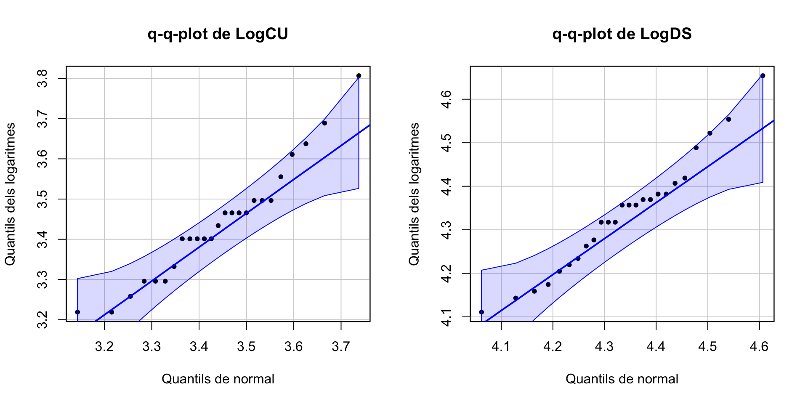

Tema 6 Contrastos d’hipòtesis d’un i dos paràmetres
Per adquirir un poc de disciplina en la realització de contrastos d’hipòtesis, procurau, almenys per ara, dividir-los en els apartats següents:
Variables aleatòries d’interès, incloent les seves unitats de mesura si en tenen, i els paràmetres poblacionals involucrats en el contrast
Contrast \[ \left\{\begin{array}{l} H_{0}: ...\\ H_{1}: ... \end{array} \right. \] i nivell de significació \(\alpha\); si no l’indicam, entendrem que \(\alpha=0.05\).
I a partir d’aquí, si el feu “a mà”:
Estadístic de contrast i distribució si la hipòtesi nul·la és vertadera
Valor de l’estadístic sobre la mostra
p-valor i, si pot ser, interval de confiança del nivell de confiança \(1-\alpha\) (per defecte, 0.95)
Conclusió
I si el feu amb R:
L’efectuau amb R
Conclusió
Per a la conclusió, emprau la plantilla següent
Hem obtingut evidència estadísticament significativa que passa tal cosa (test realitzat, p-valor …, IC 95% …).
No hem obtingut evidència estadísticament significativa que passi tal cosa (test realitzat, p-valor …, IC 95% …).
6.1 Contrastos de mitjanes
6.1.1 Test t per a una mitjana
Si estam en una de les dues situacions següents:
\(X\) és una variable aleatòria normal amb mitjana \(\mu\) i en prenem una mostra aleatòria simple de mida \(n\) qualsevol
\(X\) és una variable aleatòria qualsevol amb mitjana \(\mu\) i en prenem una mostra aleatòria simple de mida \(n\) gran (diguem que de mida com a mínim 40)
i volem realitzar un contrast \[ \left\{\begin{array}{l} H_{0}:\mu=\mu_0\\ H_{1}:\mu \neq\mu_0\text{ o }\mu >\mu_0\text{ o }\mu<\mu_0 \end{array} \right. \] podem emprar el test t que ja hem explicat a la Secció 5.5, basat en l’estadístic de contrast \[ T= \frac{\overline{X}-\mu_{0}}{{\widetilde{S}_X}/{\sqrt{n}}} \] que, en les condicions donades i si \(\mu=\mu_0\), té una distribució (aproximadament, si \(X\) no és normal però \(n\) és gran) \(t_{n-1}\).
Exemple 6.1 Una organització ecologista afirma que el pes mitjà dels individus adults d’una espècie d’animals ha disminuït dràsticament. Se sap per les dades històriques que el pes mitjà poblacional era de 460 g.
Una mostra aleatòria de 50 individus d’aquesta espècie ha donat una mitjana mostral de 428 g i una desviació típica mostral de 119 g. Amb aquestes dades, podem afirmar amb un nivell de significació del 5% que el pes mitjà és inferior a 460 g?
Variable aleatòria d’interès: \(X\): “Prenem un animaló d’aquests i anotam el seu pes, en grams”, amb mitjana \(\mu\)
Contrast: \[ \left\{\begin{array}{l} H_{0}:\mu=460\\ H_{1}:\mu<460 \end{array} \right. \]
Prenem nivell de significació \(\alpha=0.05\).
Estadístic de contrast: Com que \(n=50\) és gran, emprarem \[ T=\frac{\overline{X}-\mu_0}{{\widetilde{S}_X}/{\sqrt{n}}} \] que sí H0 és vertadera serà (aproximadament) t de Student amb \(n-1=49\) graus de llibertat
Valor de l’estadístic: \[ \dfrac{428-460}{{119}/{\sqrt{50}}}=-1.9 \]
p-valor: \[ P(T\leqslant -1.9)=\texttt{pt(-1.9,49)}=0.032 \]
Interval de confiança del 95%: \[ \left(-\infty, \overline{X}+t_{n-1,1-\alpha}\cdot \frac{\widetilde{S}_X}{\sqrt{n}}\right]=(-\infty, 456.2] \]
Conclusió: Com que el p-valor és més petit que 0.05, concloem (amb \(\alpha=0.05\)) que el pes mitjà actual és més petit que 460 g. De fet, amb un 95% de confiança podem afirmar que el pes mitjà actual és inferior a 456.2 g, que està per davall dels 460 g.
Amb la plantilla que us hem donat:
Hem obtingut evidència estadísticament significativa que el pes mitjà actual és menor que 460 g (test t, p-valor 0.03, IC 95% de \(-\infty\) a 456.2) i que per tant ha minvat en els darrers anys.
6.1.2 Test t per a dues mitjanes
Si estam en una de les situacions següents:
\(X_1,X_2\) són dues variables aleatòries normals de mitjanes \(\mu_1\), \(\mu_2\) i en prenem mostres aleatòries simples de mides \(n_1\), \(n_2\) qualssevol
\(X_1,X_2\) són dues variables aleatòries qualssevol de mitjanes \(\mu_1\), \(\mu_2\) i en prenem mostres aleatòries simples de mides \(n_1\), \(n_2\) grans (diguem que totes dues de mida com a mínim 40)
i volem realitzar un contrast \[ \left\{\begin{array}{l} H_{0}:\mu_1=\mu_2\\ H_{1}:\mu_1 \neq\mu_2\text{ o }\mu_1 >\mu_2\text{ o }\mu_1<\mu_2 \end{array} \right. \] podem emprar un test t, basat en un estadístic de contrast \(T\) adequat que segueix una llei t de Student.
L’estadístic de contrast concret i els graus de llibertat de la seva distribució t de Student depenen de dues coses. En primer lloc, de si les dues mostres són independents o aparellades:
- Independents: Hem mesurat \(X_1\) i \(X_2\) sobre dues mostres obtingudes de manera independent una de l’altra.
- Aparellades: Hem mesurat \(X_1\) i \(X_2\) sobre els subjectes d’una mateixa mostra, o hi ha un aparellament natural entre els subjectes de les dues mostres de tal manera que poguem entendre que en realitat hem pres una mostra de parelles de subjectes.
Exemple 6.2 Vegem alguns exemples de mostres aparellades i independents:
Per mirar si els estudiants dediquen més hores setmanals a Matemàtiques I que a Matemàtiques II, hem escollit a l’atzar un grup de 50 estudiants i els hem demanat el primer semestre quantes hores setmanals dediquen a Matemàtiques I i el segon semestre quantes hores setmanals dediquen a Matemàtiques II.
Hem mesurat les dues variables d’interès (hores setmanals de Matemàtiques I i de Matemàtiques II) sobre els mateixos estudiants: les dues mostres són aparellades.
Per mirar si els estudiants dediquen més hores setmanals a Matemàtiques I que a Matemàtiques II, el primer semestre hem pres a l’atzar un grup de 50 estudiants i els hem demanat quantes hores setmanals dediquen a Matemàtiques I, i el segon semestre hem pres a l’atzar un altre grup de 50 estudiants i els hem demanat quantes hores setmanals dediquen a Matemàtiques II.
Són mostres independents: cada mostra ha estat presa a l’atzar independentment de l’altra.
Per mirar si els estudiants dediquen més hores setmanals a Matemàtiques I que a Matemàtiques II, el primer semestre hem pres a l’atzar un grup de 50 estudiants i els hem demanat quantes hores setmanals dediquen a Matemàtiques I. Però ara, és clar, alguns d’aquests poden no estar matriculats a Matemàtiques II o matriculats però només de cos present.
Aleshores, el que fem el segon semestre és, per a cada un dels 50 estudiants triats el primer semestre, escollim un estudiant de Matemàtiques II que a Matemàtiques I hagi tret una nota similar. Als 50 estudiants així triats els demanam quantes hores setmanals dediquen a Matemàtiques II.
Observau que és com si haguéssim triat parelles formades per un estudiant de Matemàtiques I i un estudiant de Matemàtiques II amb notes similars de Matemàtiques I. Per tant, les mostres són aparellades.
Per esbrinar si l’estatus socioeconòmic de les famílies afecta el QI (quocient d’intel·ligència) dels fills, es prengué una mostra de 50 nins i nines de famílies d’estatus socioeconòmic alt i una de 50 nins i nines de famílies d’estatus socioeconòmic baix i se’ls mesurà el QI.
Com que no diuen res sobre haver triat els infants d’un grup aparellats amb els de l’altre, entenem que són dues mostres independents. Per poder considerar-les aparellades, hauríem de poder deduir quines parelles es formaren.
Per esbrinar si el QI té component genètic o ambiental, es prengueren 10 parelles de bessons monozigòtics que s’havien criat en famílies d’estatus socioeconòmic diferent. Es formà una mostra amb els 10 bessons que s’havien criat en una família d’estatus socioeconòmic alt i una altra amb els 10 bessons que s’havien criat en una d’estatus socioeconòmic baix. A tots ells se’ls mesurà el QI.
Aquí directament es prengué la mostra formada per parelles (les parelles de bessons) i la separaren en dues mostres de persones. Per tant, són mostres aparellades.
Tornem al test t per a dues mitjanes. Quan les mostres són independents, l’estadístic de contrast concret i els graus de llibertat de la seva distribució t de Student també depenen de si \(X_1\) i \(X_2\) tenen la mateixa variància o no (la qual cosa es pot decidir amb un altre contrast: vegeu la Secció 6.2); per a mostres de la mateixa mida de variables normals, la conclusió sol ser la mateixa
Quan les mostres són aparellades, podem entendre que tenim una sola mostra, formada per les parelles, sobre les quals mesuram la diferència \(X_1-X_2\). En aquest cas, traduïm \[ \left\{\begin{array}{l} H_{0}:\mu_1=\mu_2\\ H_{1}:\mu_1 \neq\mu_2\text{ o }\mu_1 >\mu_2\text{ o }\mu_1<\mu_2 \end{array} \right. \] en \[ \left\{\begin{array}{l} H_{0}:\mu_1-\mu_2=0\\ H_{1}:\mu_1-\mu_2 \neq0\text{ o }\mu_1-\mu_2 >0\text{ o }\mu_1-\mu_2<0 \end{array} \right. \] on \(\mu_1-\mu_2\) és la mitjana de \(X_1-X_2\), i el consideram un contrast d’una sola mitjana, emprant com a mostra les diferències \(X_1-X_2\) a les parelles.
Per tant, quan les mostres són aparellades, si diem \(D\) a \(X_1-X_2\), \(\overline{D}\) a la mitjana mostral de \(D\) i \(\widetilde{S}_D\) a la desviació típica mostral de \(D\) sobre la mostra de parelles i diem \(n\) a la mida de la mostra de parelles, l’estadístic de contrast és \[ T=\frac{\overline{D}}{\widetilde{S}_D/\sqrt{n}} \] que, quan \(\mu_D=(\mu_1-\mu_2)=0\), té distribució t de Student amb \(n-1\) graus de llibertat, \(t_{n-1}\), (aproximadament, si \(X_1,X_2\) no són normals però la \(n\) és gran).
Quan les mostres són independents, siguin \(\overline{X}_1\) i \(\widetilde{S}_{X_1}^2\) la mitjana mostral i la variància mostral de la mostra de \(X_1\) i \(\overline{X}_2\) i \(\widetilde{S}_{X_2}^2\) la mitjana mostral i la variància mostral de la mostra de \(X_2\). Diguem, a més, \(\sigma_1^2\) i \(\sigma_2^2\) a les variàncies (poblacionals) de \(X_1\) i \(X_2\). Aleshores:
Si \(\sigma_1^2=\sigma_2^2\), l’estadístic de contrast és \[ T=\frac{\overline{X}_1-\overline{X}_2}{\sqrt{(\frac{1}{n_1}+\frac{1}{n_2})\cdot \frac{(n_1-1)\widetilde{S}_{X_1}^2+(n_2-1)\widetilde{S}_{X_2}^2}{n_1+n_2-2}}} \] que, quan \(\mu_1=\mu_2\), té distribució t de Student amb \(n_1+n_2-2\) graus de llibertat, \(t_{n_1+n_2-2}\) (aproximadament, si \(X_1,X_2\) no són normals però \(n_1\) i \(n_2\) són totes dues grans).
Si \(\sigma_1^2\neq \sigma_2^2\), l’estadístic de contrast és \[ T=\frac{\overline{X}_1-\overline{X}_2}{\sqrt{\frac{\widetilde{S}_{X_1}^2}{n_1}+\frac{\widetilde{S}_{X_2}^2}{n_2}}} \] que, quan \(\mu_1=\mu_2\), té distribució t de Student amb \[ \nu=\frac{\displaystyle \left( \frac{\widetilde{S}_{X_1}^2}{n_1}+\frac{\widetilde{S}_{X_2}^2}{n_2}\right)^2} {\displaystyle \frac{1}{n_1-1}\left(\frac{\widetilde{S}_{X_1}^2}{n_1}\right)^2+\frac{1}{n_2-1}\left(\frac{\widetilde{S}_{X_2}^2}{n_2}\right)^2} \] graus de llibertat, \(t_{\nu}\) (aproximadament, si \(X_1,X_2\) no són normals però \(n_1\) i \(n_2\) són totes dues grans).
El nombre de graus de llibertat de la distribució t de Student emprada en un contrast sobre dues mostres de mida \(n\):
Si les mostres són aparellades, és \(n-1\)
Si les mostres són independents, és aproximadament \(2(n-1)\)
Això fa que amb dues mostres aparellades de \(n\) individus cadascuna sigui necessari un efecte més gran per poder rebutjar la hipòtesi nul·la que si fossin independents. Això disminueix el risc de cometre un error de tipus I.
Per exemple, suposem que volem realitzar el contrast \[ \left\{ \begin{array}{l} H_0: \mu_1=\mu_2\\ H_1: \mu_1>\mu_2 \end{array} \right. \] i que l’estadístic de contrast \(T\) sobre dues mostres de mides \(n_1=n_2=20\) dóna 1.7. Aleshores
Si les mostres són independents, \[ \text{p-valor}=P(T>1.7)\approx \texttt{1-pt(1.7,38)}=0.0487 \]
Si les mostres són aparellades, \[ \text{p-valor}=P(T>1.7)=\texttt{1-pt(1.7,19)}=0.0527 \]
Per tant, amb nivell de significació \(\alpha=0.05\), rebutjaríem la hipòtesi nul·la amb les mostres independents i l’acceptaríem amb les mostres aparellades.
6.1.3 Tests t amb R
Tots aquests tests t estan implementats en la funció de R
t.test(x, y, mu=..., alternative=..., paired=...,
var.equal=..., conf.level=...)on:
Entram com a
xuna mostra i amuel valor amb el qual volem contrastar \(\mu\), o entram com axiyles mostres de \(X_1\) i de \(X_2\)A
alternativehi hem d’indicar el tipus de contrast segons la hipòtesi alternativa:alternative="two.sided"(\(\neq\), el valor per defecte)alternative="less"(\(<\))alternative="greater"(\(>\))
En el cas d’un contrast de dues mitjanes, a
pairedhi hem d’indicar si les mostres són independents, ambpaired=FALSE(el valor per defecte), o aparellades, ambpaired=TRUEEn el cas d’un contrast de dues mitjanes amb mostres independents, a
var.equalhi hem d’indicar si les variàncies són iguals, ambvar.equal=TRUE, o diferents, ambvar.equal=FALSE(el valor per defecte)A
conf.levelhi hem d’especificar el nivell de confiança \(1-\alpha\): el seu valor per defecte és 0.95, que correspon al nivell de significació \(\alpha=0.05\) usual
6.1.4 Exemples
Exemple 6.3 La temperatura mitjana del cos humà, és el valor usualment acceptat de 98.6o F (37o C)?
Per contrastar-ho, emprarem la taula de dades Body_Temperature.txt, construïda per P.A. Mackowiak, S. S. Wasserman i M.M. Levine en 1992 precisament per realitzar aquest contrast i que trobareu a l’Aula Digital.
Variable aleatòria d’interès: \(X\): “Prenem una persona i n’anotam la temperatura, en graus F”, amb mitjana \(\mu\)
Contrast: \[ \left\{\begin{array}{l} H_{0}:\mu=98.6\\ H_{1}:\mu \neq 98.6 \end{array} \right. \]
Realitzarem aquest contrast amb R. Carregam la taula de temperatures, que prèviament hem guardat en el directori de treball de R, en un dataframe que anomenarem BT.
BT=read.table("Body_Temperature.txt")
head(BT)## Gender HeartRate Temperature
## 1 M 69 97.0
## 2 M 72 98.8
## 3 M 68 96.2
## 4 F 75 97.8
## 5 F 68 98.8
## 6 M 79 101.3str(BT)## 'data.frame': 230 obs. of 3 variables:
## $ Gender : chr "M" "M" "M" "F" ...
## $ HeartRate : int 69 72 68 75 68 79 71 73 77 81 ...
## $ Temperature: num 97 98.8 96.2 97.8 98.8 ...Veiem que la taula BT consta de 230 individus i 3 variables mesurades sobre cadascun d’ells: el sexe (variable Gender, amb nivells F per a dona i M per a home), les pulsacions per minut (variable HeartRate) i la temperatura en graus F (variable Temperature).
Com que la mostra és gran, \(n=230\), podem emprar un test t. Emprarem la funció t.test, aplicant-la al vector de temperatures i al valor que contrastam, 98.6, entrat amb el paràmetre mu. Indicarem amb el paràmetre alternative="two.sided" que el test és bilateral. No faria falta fer-ho, perquè és el seu valor per defecte. Igualment, indicarem amb el paràmetre conf.level=0.95 que volem emprar un nivell de significació de 0.05, i tampoc faria falta emprar-lo.
t.test(BT$Temperature, mu=98.6, alternative="two.sided", conf.level=0.95)##
## One Sample t-test
##
## data: BT$Temperature
## t = -5.7205, df = 229, p-value = 3.301e-08
## alternative hypothesis: true mean is not equal to 98.6
## 95 percent confidence interval:
## 98.17563 98.39307
## sample estimates:
## mean of x
## 98.28435Del resultat cal destacar:
El p-valor,
p-value, en el nostre cas 3.301·10-8 (R l’ha escrit en notació científica: 3.301e-08).L’IC 95%,
95 percent confidence interval, per al valor que contrastam (aquí, la temperatura mitjana poblacional), en el nostre cas [98.17563, 98.39307].La mitjana mostral de la mostra,
sample of x, en el nostre cas 98.28435.
Per tant:
El p-valor és 3·10-8, per la qual cosa amb les dades d’aquesta taula obtenim evidència estadísticament significativa que la temperatura mitjana del cos humà no és de 98.6o F (37o C)
A més, com que l’IC 95% per a la temperatura mitjana del cos humà que hem obtingut va de 98.2 a 98.4 (36.78 a 36.89o C), hem trobat evidència amb aquest nivell de confiança que aquesta temperatura mitjana és de fet (lleugerament) inferior a 98.6o F
Conclusió: Hem obtingut evidència estadísticament significativa que la temperatura mitjana del cos humà no és de 98.6o F (test t, p-valor 3·10-8, IC 95% de 98.2 a 98.4).
Exemple 6.4 La temperatura mitjana dels homes, és diferent de la de les dones?
Per resoldre aquesta qüestió, emprarem la mateixa taula de dades que abans.
Variables aleatòries d’interès:
- \(X_d\): “Prenem una dona i anotam la seva temperatura, en graus F”, amb mitjana \(\mu_d\)
- \(X_h\): “Prenem un home i anotam la seva la temperatura, en graus F”, amb mitjana \(\mu_h\)
Contrast: Plantejarem el contrast en termes de temperatures mitjanes: \[ \left\{\begin{array}{l} H_{0}:\mu_d=\mu_h\\ H_{1}:\mu_d\neq \mu_h \end{array} \right. \]
Per poder emprar un test t, primer ens cal saber si hi ha nombres suficientment grans d’homes i dones a la nostra mostra per emprar-lo sense haver-nos de preocupar per si les variables poblacionals són normals o no. Per això calcularem la taula de freqüències dels sexes, aplicant la funció table al vector BT$Gender dels sexes:
table(BT$Gender)##
## F M
## 116 114Són prou grans.
Anam a crear uns vectors amb les temperatures d’homes i de dones. Recordau que hi ha diverses maneres d’extreure d’un dataframe el vector de valors d’una variable V1 per als individus que prenen un valor concret X en una altra variable V2: per exemple dataframe$V1[V2==X] o dataframe[V2==X,V1]. Així, les temperatures dels homes (individus on la variable Gender és igual a M) són
BT$Temperature[BT$Gender=="M"]## [1] 97.0 98.8 96.2 101.3 99.2 97.5 97.3 98.6 99.0 98.0 97.0 97.6
## [13] 99.0 97.1 98.9 98.6 98.9 97.2 98.0 99.4 98.8 98.5 99.6 97.3
## [25] 96.5 97.8 98.3 98.1 98.8 97.7 98.3 97.7 99.1 98.8 97.4 96.9
## [37] 98.0 98.4 100.3 97.0 99.0 100.6 98.0 98.5 97.0 97.0 98.6 97.8
## [49] 97.3 96.3 96.7 96.9 97.0 97.1 97.1 97.1 97.2 97.3 97.4 97.4
## [61] 97.4 97.4 97.5 97.5 97.6 97.6 97.6 97.7 97.8 97.8 97.8 97.8
## [73] 97.9 97.9 98.0 98.0 98.0 98.0 98.0 98.0 98.1 98.1 98.2 98.2
## [85] 98.2 98.2 98.3 98.3 98.4 98.4 98.4 98.4 98.5 98.5 98.6 98.6
## [97] 98.6 98.6 98.6 98.6 98.7 98.7 98.8 98.8 98.8 98.9 99.0 99.0
## [109] 99.0 99.1 99.2 99.3 99.4 99.5Bé, cream els vectors \(X_d\) (dones) i \(X_h\) (homes)
X_d=BT$Temperature[BT$Gender=="F"] # Temperatures de dones
X_h=BT$Temperature[BT$Gender=="M"] # Temperatures d'homesPer portar a terme un test t per comparar dues mitjanes, aplicam la funció t.test als vectors X_di X_h. Ja no afegirem els paràmetres alternative="two.sided" i conf.level=0.95 perquè són els valors per defecte. En aquest exemple, a més, especificarem que les mostres són independents amb paired=FALSE (no caldria, ja que també n’és el valor per defecte) i a més hem d’especificar si les variàncies poblacionals són iguals (var.equal=TRUE) o diferents (var.equal=FALSE). El que farem aquí serà provar els dos casos: amb les variàncies iguals i amb les variàncies diferents. Si les dues conclusions són la mateixa, aquesta serà la conclusió que prendrem. Si dóna diferent, haurem de realitzar un contrast previ per decidir si hem de suposar que les variàncies són iguals o diferents.
t.test(X_d, X_h, paired=FALSE, var.equal=TRUE)##
## Two Sample t-test
##
## data: X_d and X_h
## t = 2.5379, df = 228, p-value = 0.01182
## alternative hypothesis: true difference in means is not equal to 0
## 95 percent confidence interval:
## 0.06189412 0.49173564
## sample estimates:
## mean of x mean of y
## 98.42155 98.14474t.test(X_d, X_h, paired=FALSE, var.equal=FALSE)##
## Welch Two Sample t-test
##
## data: X_d and X_h
## t = 2.5358, df = 225.32, p-value = 0.0119
## alternative hypothesis: true difference in means is not equal to 0
## 95 percent confidence interval:
## 0.06170851 0.49192125
## sample estimates:
## mean of x mean of y
## 98.42155 98.14474En tots dos casos obtenim un p-valor (p-value) de l’ordre de 0.012. L’IC 95 % (95 percent confidence interval) que ens dóna és per a la diferència de les mitjanes poblacionals, \(\mu_d-\mu_h\). Com que no conté el 0, podem rebutjar que les dues mitjanes siguin iguals (que \(\mu_d-\mu_h=0\)).
Conclusió: Hem obtingut evidència estadísticament significativa que la temperatura mitjana de les dones és diferent de la dels homes (test t, p-valor 0.012, IC 95% per a la diferència de les mitjanes de 0.062 a 0.492).
Exemple 6.5 Desdijunar segó de civada (oat bran) en lloc de flocs de blat de moro (corn flakes), ajuda a reduir el nivell de colesterol?
Per resoldre aquesta qüestió, emprarem la taula de dades oatbran.txt, que trobareu a l’Aula Digital. Aquestes dades es recolliren en un assaig creuat sobre 14 individus. A cada un d’ells se li assignà un dels dos desdejunis de manera aleatòria i el prengueren durant 15 dies. Al final d’aquest període, se’ls mesurà el nivell de colesterol en sang. Passat un mes de descans, cada participant va desdejunar durant 15 dies l’altre producte, i al final se’ls tornà a mesurar el nivell de colesterol en sang. En aquesta taula, aquests nivells de colesterol estan mesurats en milimols per litre.
Fixau-vos que les mostres obtengudes d’aquesta manera són aparellades, perquè es mesuraren les dues variables aleatòries sobre els mateixos individus en dos moments diferents.
Variables aleatòries d’interès:
- \(X_{ob}\): “Prenem una persona que desdejuna oat bran i li mesuram el nivell de colesterol en mmol/l”, amb mitjana \(\mu_{ob}\)
- \(X_{cf}\): “Prenem una persona que desdejuna corn flakes i li mesuram el nivell de colesterol en mmol/l”, amb mitjana \(\mu_{cf}\)
Contrast: El plantejarem en termes de nivells mitjans de colesterol: \[ \left\{\begin{array}{l} H_{0}:\mu_{ob}=\mu_{cf}\\ H_{1}:\mu_{ob}< \mu_{cf} \end{array} \right. \]
Carregam la taula de dades, que prèviament hem guardat en el directori de treball de R, en un dataframe al que anomenam OBR i consultam la seva estructura:
OBR=read.table("oatbran.txt",header=TRUE)
head(OBR)## CORNFLK OATBRAN
## 1 4.61 3.94
## 2 6.42 5.57
## 3 5.40 5.85
## 4 4.54 4.80
## 5 3.98 3.68
## 6 3.82 2.96str(OBR)## 'data.frame': 14 obs. of 2 variables:
## $ CORNFLK: num 4.61 6.42 5.4 4.54 3.98 3.82 5.01 4.34 3.8 4.56 ...
## $ OATBRAN: num 3.94 5.57 5.85 4.8 3.68 2.96 4.41 3.72 3.49 3.94 ...N’extraiem les dues variables en forma de vectors:
OAT=OBR$OATBRAN
CFL=OBR$CORNFLKCom que mostres de mida 14 són petites, si volem aplicar un test t necessitam que les diferències OAT-CFL provenguin d’una distribució normal. Per decidir si és veritat o no, més endavant explicarem contrastos de bondat d’ajust, amb hipòtesi nul·la “Aquesta mostra prové d’una variable aleatòria amb tal distribució” i hipòtesi alternativa “No és veritat que aquesta mostra provengui d’una variable aleatòria amb tal distribució”. Per ara ens conformarem amb decidir-ho a partir d’un gràfic.
A Matemàtiques I us explicàvem que podeu dibuixar un histograma d’una mostra afegint-hi la densitat estimada, a partir de la mostra, de la variable poblacional i la densitat d’una distribució normal amb mitjana i desviació típica les de la mostra, i mirar si sembla que les dades segueixen aquesta distribució normal. Però amb poques dades això és mal de veure:
hist(OAT-CFL,freq=FALSE, breaks=4,col="light blue",xlab="Colesterol",
ylab="Densitat", main="Histograma de les diferències",ylim=c(0,1))
lines(density(OAT-CFL),lty=2,lwd=2)
curve(dnorm(x,mean(OAT-CFL),sd(OAT-CFL)),col="red",lwd=2,add=TRUE)
legend("topright",legend=c("Densitat estimada","Normal"),
col=c("black","red"),lty=c(2,1),cex=0.75)
En aquest cas, una opció millor és dibuixar un q-q-plot. Un q-q-plot d’una mostra i una distribució teòrica és el gràfic dels q-q-punts: els punts de la forma (q-quantil de la distribució, q-quantil de la mostra), per a tots els valors de q que tengui sentit donada la mida de la mostra. Quan la distribució amb la que comparam la mostra és una normal, se’n sol dir un normal-plot.
Si la mostra prové de la distribució emprada en el q-q-plot, és d’esperar que el q-quantil de la mostra sigui aproximadament igual al q-quantil de la distribució i per tant que aquests q-q-punts estiguin prop de la diagonal principal \(y=x\).
La funció qqPlot del paquet car produeix uns q-q-plots que contenen una regió de confiança del 95% que especifica què vol dir això que “els q-q-punts estiguin prop de la diagonal principal \(y=x\)”, amb el significat usual de nivell de confiança. En particular, si tots els q-q-punts cauen aquesta regió de confiança, amb un 95% de confiança podem acceptar que la mostra prové de la distribució representada a l’eix d’abscisses. L’explicam amb detall a la lliçó de R sobre Contrastos de Bondat d’Ajust.
Vegem el q-q-plot de la nostra mostra de diferències:
car::qqPlot(OAT-CFL, distribution="norm", mean=mean(OAT-CFL), sd=sd(OAT-CFL),
ylab="Quantils de OAT-CFL", xlab="Quantils de normal",
main="q-q-plot de les diferències", pch=20, id=FALSE,)
Veiem que podem acceptar que les diferències provenen d’una distribució normal: podem fer servir un test t.
En aquest cas, el test t és de mostres aparellades. Per tant, a t.test hi hem d’especificar paired=TRUE i no hi hem d’especificar el paràmetre var.equal (la igualtat o no de variàncies només s’ha de tenir en compte en els tests amb mostres independents). Emprarem el paràmetre alternative="less" per indicar que el test és unilateral: la hipòtesi alternativa és que la mitjana de la població corresponent a la primera mostra, OAT, és més petita que la de la corresponent a la segona mostra, CFL.
t.test(OAT,CFL,alternative="less", paired=TRUE)##
## Paired t-test
##
## data: OAT and CFL
## t = -3.3195, df = 13, p-value = 0.002768
## alternative hypothesis: true difference in means is less than 0
## 95 percent confidence interval:
## -Inf -0.1626132
## sample estimates:
## mean of the differences
## -0.3485714Com abans, el resultat inclou el p-valor, l’IC 95% per a la mitjana de les diferències (que és igual a la diferència de les mitjanes: recordau que \(E(X-Y)=E(X)-E(Y)\)) i ara, com a novetat, la mitjana de les diferències (mean of the differences) en comptes de les dues mitjanes.
Conclusió: Hem obtingut evidència estadísticament significativa que desdejunar oatbran redueix el nivell mitjà de colesterol respecte de desdejunar corn flakes (test t, p-valor 0.003, IC 95% per a la diferència de les mitjanes de \(-\infty\) a -0.163).
Exemple 6.6 Volem contrastar si el nivell de triglicèrids als nadons de 2 setmanes és més alt que el del seu cordó umbilical en néixer. Per fer-ho, emprarem les dades d’una mostra de 25 nadons als quals els mesuraren els nivells de triglicèrids en plasma a la sang del seu cordó umbilical i a la seva sang al cap de 2 setmanes de néixer (les dues en ng/dl). Tenim les dades a la taula trignadons.txt que trobareu a l’Aula Digital. Les seves variables són CU, les mesures del cordó umbilical, DS, les mesures al cap de dues setmanes, i Nin, que identifica el nadó.
Les mostres obtengudes d’aquesta manera tornen a ser aparellades, perquè es mesuraren les dues variables aleatòries sobre els mateixos nadons en dos moments diferents.
Variables aleatòries d’interès:
- \(X_{cu}\): “Prenem un recent nat i mesuram el nivell de triglicèrids en plasma a la sang del seu cordó umbilical en ng/dl”, amb mitjana \(\mu_{cu}\)
- \(X_{ds}\): “Prenem un nadó de 2 setmanes i mesuram el seu nivell de triglicèrids en plasma en ng/dl”, amb mitjana \(\mu_{ds}\)
Contrast: Plantejarem el contrast en termes dels nivells mitjans de triglicèrids: \[ \left\{\begin{array}{l} H_{0}:\mu_{cu}=\mu_{ds}\\ H_{1}:\mu_{cu}< \mu_{ds} \end{array} \right. \]
Carregam la taula de dades, que prèviament hem guardat en el directori de treball de R, en un dataframe al que anomenam TGN i consultam la seva estructura:
TGN=read.table("trignadons.txt",header=TRUE)
head(TGN)## Nin CU DS
## 1 1 45 80
## 2 2 30 68
## 3 3 30 83
## 4 4 30 78
## 5 5 31 79
## 6 6 27 78str(TGN)## 'data.frame': 25 obs. of 3 variables:
## $ Nin: int 1 2 3 4 5 6 7 8 9 10 ...
## $ CU : int 45 30 30 30 31 27 27 30 33 32 ...
## $ DS : int 80 68 83 78 79 78 89 78 72 75 ...Com que 25 dades per mostra són poques, miram si les diferències segueixen una distribució normal amb un normal-plot.
Diffs=TGN$CU-TGN$DS
car::qqPlot(Diffs, distribution="norm", mean=mean(Diffs), sd=sd(Diffs),
ylab="Quantils de les diferències", xlab="Quantils de normal",
pch=20, id=FALSE)
Podem acceptar que les diferències provenen d’una distribució normal, així que podem tirar endavant amb un test t. Però abans de continuar, volem fer-vos observar que, en aquest exemple, les mostres de triglicèrids per separat no semblen venir de variables normals.
car::qqPlot(TGN$CU, distribution="norm", mean=mean(TGN$CU), sd=sd(TGN$CU),
ylab="Quantils de la mostra", xlab="Quantils de normal",
main="q-q-plot de CU", pch=20, id=FALSE)
car::qqPlot(TGN$DS, distribution="norm", mean=mean(TGN$DS), sd=sd(TGN$DS),
ylab="Quantils de la mostra", xlab="Quantils de normal",
main="q-q-plot de DS", pch=20, id=FALSE)
Hi ha q-q-punts fora de la regió de confiança. Vegem els seus histogrames
hist(TGN$CU, freq=FALSE, main="Histograma de TGN$CU",
xlab="",ylab="",col="light blue")
lines(density(TGN$CU),lty=2,lwd=2)
curve(dnorm(x,mean(TGN$CU),sd(TGN$CU)),col="red",lwd=2,add=TRUE)
legend("topright",legend=c("Densitat estimada","Normal"),col=c("black","red"),
lty=c(2,1),cex=0.5)
#
hist(TGN$DS, freq=FALSE, main="Histograma de TGN$DS",
xlab="",ylab="",col="light blue")
lines(density(TGN$DS),lty=2,lwd=2)
curve(dnorm(x,mean(TGN$DS),sd(TGN$DS)),col="red",lwd=2,add=TRUE)
legend("topright",legend=c("Densitat estimada","Normal"),col=c("black","red"),
lty=c(2,1),cex=0.5)
Les dues mostres presenten una cua a la dreta.
Per sort, com que les mostres són aparellades, bastava que les diferències seguissin una llei normal. Efectuem el test t:
t.test(TGN$CU, TGN$DS, paired=TRUE, alternative="less")##
## Paired t-test
##
## data: TGN$CU and TGN$DS
## t = -21.988, df = 24, p-value < 2.2e-16
## alternative hypothesis: true difference in means is less than 0
## 95 percent confidence interval:
## -Inf -41.8674
## sample estimates:
## mean of the differences
## -45.4Conclusió: Hem obtingut evidència estadísticament significativa que el nivell mitjà de triglicèrids a la sang del cordó umbilical d’un nadó és més petit que el nivell mitjà de triglicèrids a la sang d’un nadó de 2 setmanes (test t, p-valor<2.2·10-16, IC 95% per a la diferència de les mitjanes de \(-\infty\) a -41.8674).
Exemple 6.7 Imaginau ara que les mostres TGN$CU i TGN$DS haguessin estat independents.
En aquest cas, com que, com hem vist, no podríem acceptar que provenen de variables normals, no podríem fer servir un test t.
En aquesta situació, tenim dues opcions. Una és emprar un test no paramètric: serà el que farem a la pròxima secció (Exemple 6.9). Una altra és recordar de la Secció 2.5.4 que quan tenim una variable amb una cua a la dreta, pot ser que els logaritmes segueixin aproximadament una distribució normal. Vegem si hi ha sort.
LogCU=log(TGN$CU)
qqPlot(LogCU, distribution="norm", mean=mean(LogCU), sd=sd(LogCU),
ylab="Quantils dels logaritmes", xlab="Quantils de normal",
main="q-q-plot de LogCU", pch=20, id=FALSE)
#
LogDS=log(TGN$DS)
qqPlot(LogDS, distribution="norm", mean=mean(LogDS), sd=sd(LogDS),
ylab="Quantils dels logaritmes", xlab="Quantils de normal",
main="q-q-plot de LogDS", pch=20, id=FALSE)
Aquests logaritmes ja poden passar per normals. Per tant, el que faríem seria, en lloc de comparar les mitjanes dels nivells de triglicèrids, comparar les mitjanes dels seus logaritmes.
No són contrastos equivalents, perquè el logaritme de la mitjana no és la mitjana del logaritme. Però en realitat la pregunta que originava aquesta investigació era si el nivell de triglicèrids augmenta en les dues primeres setmanes de vida dels nadons, i ho plantejàvem en termes de si és veritat que el nivell mitjà de triglicèrids augmenta en les dues primeres setmanes de vida dels nadons.
Ara, demanar-nos si “el nivell de triglicèrids augmenta en les dues primeres setmanes de vida dels nadons” sí que és equivalent a demanar-nos si “el logaritme del nivell de triglicèrids augmenta en les dues primeres setmanes de vida dels nadons”. I el que fem és plantejar aquesta pregunta en termes de si és veritat que el valor mitjà del logaritme del nivell de triglicèrids augmenta en les dues primeres setmanes de vida dels nadonsPer tant, les noves variables aleatòries d’interès són:
- \(\ln(X_{cu})\): “Prenem un recent nat i calculam el logaritme del nivell de triglicèrids en plasma a la sang del seu cordó umbilical”, amb mitjana \(\mu_{logcu}\)
- \(\ln(X_{ds})\): “Prenem un nadó de 2 setmanes i calculam el logaritme del seu nivell de triglicèrids en plasma”, amb mitjana \(\mu_{logds}\)
Nou contrast: \[ \left\{\begin{array}{l} H_{0}:\mu_{logcu}=\mu_{logds}\\ H_{1}:\mu_{logcu}< \mu_{logds} \end{array} \right. \]
Prenem com a mostres de \(\ln(X_{cu})\) i \(\ln(X_{ds})\) els vectors de logaritmes LogCU i LogDS de la nostra mostra original, que podem acceptar que provenen de distribucions normals, i els aplicam la funció t.test amb alternative="less", paired=FALSE (recordau que en aquest exemple estam suposant que les mostres són independents), i els dos valors de var.equal.
t.test(LogCU, LogDS, var.equal=TRUE, paired=FALSE, alternative="less")##
## Two Sample t-test
##
## data: LogCU and LogDS
## t = -22.766, df = 48, p-value < 2.2e-16
## alternative hypothesis: true difference in means is less than 0
## 95 percent confidence interval:
## -Inf -0.8280214
## sample estimates:
## mean of x mean of y
## 3.440296 4.334172t.test(LogCU, LogDS, var.equal=FALSE, paired=FALSE, alternative="less")##
## Welch Two Sample t-test
##
## data: LogCU and LogDS
## t = -22.766, df = 47.642, p-value < 2.2e-16
## alternative hypothesis: true difference in means is less than 0
## 95 percent confidence interval:
## -Inf -0.8280117
## sample estimates:
## mean of x mean of y
## 3.440296 4.334172Conclusió: Hem obtingut evidència estadísticament significativa que el valor mitjà del logaritme del nivell de triglicèrids a la sang del cordó umbilical d’un nadó és més petit que el valor mitjà del logaritme del nivell de triglicèrids a la sang d’un nadó de 2 setmanes (test t, p-valor<2.2·10-16, IC 95% per a la diferència de les mitjanes dels logaritmes de \(-\infty\) a -0.828). Concloem, per tant, que tenim evidència estadísticament significativa que el nivell de triglicèrids als nadons de 2 setmanes és més alt que el del seu cordó umbilical.
6.1.5 Tests no paramètrics
Si les variables aleatòries d’interès no són (aproximadament) normals i alguna mostra és petita, no podem emprar un test t per comparar mitjanes. En aquest cas, una possibilitat és provar de transformar les dades com a l’Exemple 6.6 per veure si la transformació esdevé normal, i si és el cas, plantejar el contrast en termes de mitjanes de les dades transformades
Una altra possibilitat és emprar un test no paramètric, que no necessiti que les variables aleatòries siguin normals perquè la conclusió sigui vàlida.
La majoria de tests no paramètrics per comparar mitjanes en realitat comparen medianes, però normalment cometem l’abús de llenguatge de dir que són per contrastar mitjanes. A més, si les variables aleatòries són simètriques, les mitjanes coincideixen amb les medianes.
Els més populars són:
Test de Wilcoxon per a una mitjana o dues mitjanes emprant mostres aparellades
Test de Mann-Whitney per a dues mitjanes emprant mostres independents
Tots tres es calculen amb R amb la funció
wilcox.test(x, y, mu=..., alternative=..., paired=...,
conf.level=...)amb sintaxi idèntica a la de t.test (excepte que no s’hi empra el var.equal).
Els millors tests no paramètrics solen tenir potència inferior als millors tests paramètrics. A més, no tots els tests no paramètrics produeixen intervals de confiança. Per tant, sempre que sigui possible és més convenient emprar un test paramètric. Però només si és possible. Emprar un test paramètric quan no és adequat pot portar a conclusions equivocades.
Emprau tests paramètrics sempre que pogueu, però només quan pogueu.Com a exemple, vegem com funciona (una versió simplificada) del test de Wilcoxon d’una mitjana. Sigui \(X\) una variable aleatòria contínua simètrica al voltant de la seva mitjana \(\mu\) desconeguda. Volem realitzar un contrast \[ \left\{\begin{array}{l} H_{0}:\mu=\mu_0\\ H_{1}:\mu \neq \mu_0 \text{ o }\mu >\mu_0\text{ o }\mu<\mu_0 \end{array} \right. \]
Prenem una mostra aleatòria simple \(x_1,\ldots, x_n\) de \(X\). El procediment d’aquest test es basa aleshores en els següents passos, que després il·lustram a l’Exemple 6.8:
Per a cada \(i=1,\ldots,n\), sigui \(d_i=x_i-\mu_0\). Als passos següents no es tenen en compte els \(d_i=0\).
Enumeram els valors \(d_i\neq 0\) de menor a major valor absolut; en cas d’empats, a cada un dels valors empatats li assignam la mitjana de les posicions que ocuparien. A l’índex assignat d’aquesta manera a cada \(d_i\) li diem el seu rang. Per exemple, a l’Exemple 6.8 hi ha quatre \(i\) amb valors \(d_i=\pm 1\), i els tocarien les posicions 1, 2, 3 i 4: aleshores el rang de cada un d’aquests quatre \(d_i\) és 2.5.
Diem \(T_+\) a la suma dels rangs dels \(d_i>0\) i \(T_{-}\) a la suma dels rangs dels \(d_i<0\)
Si H0 vertadera, és a dir, si \(\mu=\mu_0\), per la simetria de \(X\) al voltant de \(\mu\) esperam que \(T_+\approx T_-\). Per tant:
Si \(T_+\) és molt petit, és evidència que \(\mu <\mu_0\)
En efecte, si \(T_+\) és molt més petit que \(T_-\), bàsicament significa que hi ha molts més valors a l’esquerra de \(\mu_0\) que a la seva dreta. Això ens dóna evidència que la mediana poblacional (que és el valor que deixa la meitat de la població a l’esquerra i l’altra meitat a la dreta) ha d’estar a l’esquerra de \(\mu_0\).
Si \(T_+\) és molt gran, és evidència que \(\mu >\mu_0\)
En efecte, si \(T_+\) és molt més gran que \(T_-\), bàsicament significa que hi ha més valors a la dreta de \(\mu_0\) que a l’esquerra. Això és evidència que més de la meitat dels valors estan a la dreta de \(\mu_0\), és a dir, que la mediana està a la dreta de \(\mu_0\).
Si \(T_+\) és molt petit o molt gran, és evidència que \(\mu\neq \mu_0\)
I resulta que, quan \(X\) és simètrica i H0 vertadera, la distribució de \(T_+\), per a cada \(n\), és coneguda, la qual cosa es pot emprar per calcular el p-valor. Això ho fa la funció
wilcox.test.
Exemple 6.8 Alimentàrem amb una dieta especial 13 ratolins des del naixement fins a la setmana 12. Els augments de pes (en grams) varen ser els del vector següent
pesos=c(69,61,69,65,70,68,69,68,72,67,74,69,76)Podem concloure que l’augment mitjà de pes en aquestes condicions és de menys de 70 g?
Variable aleatòria d’interès: \(X\): “Prenem un ratolí alimentat amb aquesta dieta especial i mesuram el seu augment de pes en grams durant les seves primeres 12 setmanes de vida”, amb mitjana \(\mu\).
Contrast: \[ \left\{\begin{array}{l} H_{0}:\mu=70\\ H_{1}:\mu <70 \end{array} \right. \]
Si miram la mostra, veurem que no té pinta de venir d’una distribució normal però sí simètrica:
qqPlot(pesos, distribution="norm", mean=mean(pesos), sd=sd(pesos),
ylab="Quantils de la mostra", xlab="Quantils de normal", pch=20, id=FALSE)
stripchart(pesos,method="stack",vertical=TRUE,pch=20)
Per tant, emprarem un test de Wilcoxon. Vegem com aniria a mà.
- Calculam els \(d_i=x_i-70\)
\[ \begin{array}{l|cccccccccccccc} \hline x_i & 69 & 61 & 69 & 65 & 70 & 68 & 69 & 68 & 72 & 67 & 74 & 69 & 76\\ d_i & -1 & -9 & -1 & -5 & 0 & -2 & -1 & -2 & 2 & -3 & 4 & -1 & 6\\ \hline \end{array} \]
- Assignam índexos als \(d_i\neq 0\) en ordre creixent al seu valor absolut. En cas d’empat, per ara els assignam els índexos ordenats d’esquerra a dreta.
\[ \begin{array}{l|cccccccccccccc} \hline x_i & 69 & 61 & 69 & 65 & 70 & 68 & 69 & 68 & 72 & 67 & 74 & 69 & 76\\ d_i & -1 & -9 & -1 & -5 & 0 & -2 & -1 & -2 & 2 & -3 & 4 & -1 & 6\\ \textrm{Rang fals} & 1 & 12 & 2 & 10 & & 5 & 3 & 6 & 7 & 8 & 9 & 4 & 11 \\ \hline \end{array} \]
- A continuació, assignam com a rang de cada \(d_i\) la mitjana de tots els “rangs falsos” dels \(d_i\) amb el seu mateix valor absolut. Així, el rang de tots els \(d_i=-1\) és \((1+2+3+4)/4=2.5\) i el rang dels \(d_i=-2\) o 2 és \((5+6+7)/3=6\).
\[ \begin{array}{l|cccccccccccccc} \hline x_i & 69 & 61 & 69 & 65 & 70 & 68 & 69 & 68 & 72 & 67 & 74 & 69 & 76\\ d_i & -1 & -9 & -1 & -5 & 0 & -2 & -1 & -2 & 2 & -3 & 4 & -1 & 6\\ \textrm{Rang fals} & 1 & 12 & 2 & 10 & & 5 & 3 & 6 & 7 & 8 & 9 & 4 & 11 \\ \textrm{Rang} & 2.5 & 12 & 2.5 & 10 & & 6 & 2.5 & 6 & 6 & 8 & 9 & 2.5 & 11 \\ \hline \end{array} \]
- Anotam quins \(d_i\) són positius i quins negatius:
\[ \begin{array}{l|cccccccccccccc} \hline x_i & 69 & 61 & 69 & 65 & 70 & 68 & 69 & 68 & 72 & 67 & 74 & 69 & 76\\ d_i & -1 & -9 & -1 & -5 & 0 & -2 & -1 & -2 & 2 & -3 & 4 & -1 & 6\\ \textrm{Rang fals} & 1 & 12 & 2 & 10 & & 5 & 3 & 6 & 7 & 8 & 9 & 4 & 11 \\ \textrm{Rang} & 2.5 & 12 & 2.5 & 10 & & 6 & 2.5 & 6 & 6 & 8 & 9 & 2.5 & 11 \\ \textrm{Signe} & - & - & - & - & & - & - & - & + & - & + & - & +\\ \hline \end{array} \]
Sumam, d’una banda, els rangs dels \(d_i\) positius i de l’altra, els dels negatius: \[ \begin{array}{l} T_+=6+9+11=26\\ T_-=2.5+ 12 + 2.5 + 10 + 6 + 2.5 + 6 + 8 + 2.5=52 \end{array} \]
I ara miraríem si \(T_+\) és prou més petit que \(T_-\) perquè sigui evidència estadísticament significativa de que \(\mu <\mu_0\). Això ja no ho podem fer a mà.
Amb R, simplement entraríem
wilcox.test(pesos,mu=70,alternative="less")##
## Wilcoxon signed rank test with continuity correction
##
## data: pesos
## V = 26, p-value = 0.1621
## alternative hypothesis: true location is less than 70Conclusió: No hem obtingut evidència estadísticament significativa que l’augment mitjà de pes en aquestes condicions sigui més petit que 70 g (test de Wilcoxon, p-valor 0.16).
El test de Wilcoxon per a dues mitjanes emprant mostres aparellades és bàsicament el test anterior aplicat a la diferència dels valors de les dues variables a les parelles.
Exemple 6.9 Una alternativa a la transformació logarítmica portada a terme a l’Exemple 6.7 hagués estat emprar el test de Wilcoxon per a mostres independents.
El contrast ara seria \[ \left\{\begin{array}{l} H_{0}:\mu_{cu}-\mu_{ds}=0\\ H_{1}:\mu_{cu}- \mu_{ds}<0 \end{array} \right. \] que clarament correspon al contrast original \[ \left\{\begin{array}{l} H_{0}:\mu_{cu}=\mu_{ds}\\ H_{1}:\mu_{cu}< \mu_{ds} \end{array} \right. \] però hem de tenir present que la hipòtesi nul·la en realitat significa que la mediana de les diferències dels nivells de triglicèrids en el cordó umbilical menys els nivells de triglicèrids al cap de dues setmanes és 0, és a dir
Si restam del nivell de triglicèrids en la sang del cordó umbilical d’un nadó el seu nivell de triglicèrids en sang al cap de dues setmanes, la meitat de les vegades obtenim un valor \(\geqslant 0\) i l’altra meitat de les vegades un valor \(\leqslant 0\),
o, equivalentment,
La meitat dels nadons tenen el nivell de triglicèrids en la sang del cordó umbilical més alt o igual que el seu nivell de triglicèrids en sang al cap de dues setmanes, i l’altra meitat tenen el nivell de triglicèrids en la sang del cordó umbilical més petit o igual que el seu nivell de triglicèrids en sang al cap de dues setmanes.
La hipòtesi alternativa és que aquesta mediana és negativa. És a dir, la hipòtesi alternativa és
Si restam el nivell de triglicèrids en la sang del cordó umbilical d’un nadó menys el nivell de triglicèrids en sang al cap de dues setmanes, més de la meitat de les vegades obtendríem un valor \(<0\)
o, equivalentment,
Més de la meitat dels nadons tenen el nivell de triglicèrids en la sang del cordó umbilical més petit que el seu nivell de triglicèrids en sang al cap de dues setmanes.
wilcox.test(TGN$CU,TGN$DS,alternative="less",paired=FALSE)##
## Wilcoxon rank sum test with continuity correction
##
## data: TGN$CU and TGN$DS
## W = 0, p-value = 6.771e-10
## alternative hypothesis: true location shift is less than 0Com que el p-valor és de l’ordre de 10-10, rebutjam la hipòtesi nul·la en favor de la alternativa; abusarem del llenguatge i ho expressarem en termes de mitjanes:
Conclusió: Hem obtingut evidència estadísticament significativa que el nivell mitjà de triglicèrids a la sang del cordó umbilical dels nadons és més petit que al cap de dues setmanes (test de Wilcoxon, p-valor 6.7·10-10).
I tant! L’únic que cal tenir-hi en compte és que en el contrast de dues mitjanes que s’efectua amb un bootstrap la hipòtesi nul·la no és només \(\mu_1=\mu_2\), sinó
Les dues mostres provenen de la mateixa variable poblacional
És a dir, el contrast que resoldrem serà \[ \left\{\begin{array}{l} H_0:\ \text{$X_{cu}$ i $X_{ds}$ tenen la mateixa distribució}\\ H_1:\ \text{$\mu_{cu}<\mu_{ds}$} \end{array}\right. \]
Diguem \(A\) a la mostra TGN$CU i \(B\) a la mostra TGN$DS. Siguin \(n_A\) i \(n_B\) les seves mides, que en el nostre cas son totes dues 25.
El que farem és el següent:
- Concatenam en un únic vector les mostres \(A\) i \(B\). Obtenim un vector de \(n_A+n_B\) dades, les primeres \(n_A\) d’una mostra i les altres \(n_B\) de l’altra mostra.
A=TGN$CU
B=TGN$DS
nA=length(A)
nB=length(B)
Global=c(A,B)Repetim 5000 vegades el procés següent:
- Prenem una m.a.s. de
Globalde la seva mateixa mida, \(n_A+n_B\) - Calculam la mitjana de les primeres \(n_A\) entrades
- Calculam la mitjana de les darreres \(n_B\) entrades
- Calculam la diferència d’aquestes mitjanes
Organitzam totes aquestes diferències de mitjanes en un vector.
Fixarem la llavor d’aleatorietat, perquè el resultat sigui reproduïble.
- Prenem una m.a.s. de
set.seed(1234)
DifM=function(x,n,m){mean(x[1:n])-mean(x[(n+1):(n+m)])}
Remostreig=replicate(5000,DifM(sample(Global, nA+nB, rep=TRUE),nA,nB))- Prendrem com a p-valor la proporció d’aquestes diferències de mitjanes que són més petites o iguals que \(\overline{A}-\overline{B}\).
p.valor=length(which(Remostreig<=mean(A)-mean(B)))/length(Remostreig)
p.valor## [1] 0Vaja!
mean(A)-mean(B)## [1] -45.4min(Remostreig)## [1] -27.76Què significa això? Si les dues mostres de triglicèrids provinguessin de la mateixa variable, el vector Global seria una mostra d’aquesta variable. Llavors, la diferència \(\overline{A}-\overline{B}\) entre la mitjana de les seves primeres 25 entrades i la de les seves darreres 25 entrades no hauria de ser molt diferent de la diferència entre la mitjana d’una mostra genèrica de 25 entrades i una altra mostra genèrica de 25 entrades. Què fem? Estimam la distribució d’aquestes diferències de mitjanes amb el remostreig, i comparam la nostra diferència \(\overline{A}-\overline{B}\) amb aquesta distribució. Resulta que és més petita que totes aquestes mitjanes. Per tant, seria “molt rara” per a aquesta distribució. Aleshores, això ho entenem com a senyal que la nostra premissa és falsa, és a dir, que les dues mostres de triglicèrids no provenen de la mateixa variable.
Conclusió: Hem obtingut evidència estadísticament significativa que el nivell mitjà de triglicèrids a la sang del cordó umbilical dels nadons és més petit que al cap de dues setmanes (bootstrap, p-valor 0).
6.2 Contrastos de variàncies
6.2.1 Test \(\chi^2\) d’una variància
Siguin \(X\) una variable aleatòria normal amb desviació típica \(\sigma\). Volem realitzar un contrast \[ \left\{\begin{array}{l} H_{0}:\sigma=\sigma_0\\ H_{1}:\sigma \neq\sigma_0\text{ o }\sigma >\sigma_0\text{ o }\sigma<\sigma_0 \end{array} \right. \] o equivalentment \[ \left\{\begin{array}{l} H_{0}:\sigma^2=\sigma_0^2\\ H_{1}:\sigma^2 \neq\sigma_0^2\text{ o }\sigma^2 >\sigma_0^2\text{ o }\sigma^2<\sigma_0^2 \end{array} \right. \]
Prenem una mostra aleatòria simple de mida \(n\) de \(X\). Recordem, aleshores, que \[ \frac{(n-1) \widetilde{S}_X^2}{\sigma^2} \] té distribució khi quadrat amb \(n-1\) graus de llibertat, \(\chi_{n-1}^2\).
Per tant, si H0 és vertadera (si \(\sigma=\sigma_0\)), l’estadístic de contrast \[ \chi^2=\frac{(n-1) \widetilde{S}_X^2}{\sigma_{0}^2} \]
té distribució \(\chi_{n-1}^2\). Això ho podem emprar per calcular p-valors, regions crítiques etc. En concret, si el valor d’aquest estadístic de contrast sobre la mostra és \(\chi_0^2\), aleshores:
Si \(H_{1}:\sigma>\sigma_{0}\), el p-valor és \(P(\chi^2\geqslant \chi_0^2)\)
Si \(H_{1}:\sigma<\sigma_{0}\), el p-valor és \(P(\chi^2\leqslant \chi^2_0)\)
Si \(H_{1}:\sigma\neq \sigma_{0}\), el p-valor es pren, per conveni, igual a \(2\text{min}\big\{P(\chi^2\geqslant \chi^2_0), P(\chi^2\leqslant\chi^2_0)\big\}\)
Exemple 6.10 Suposem que tenim una mostra aleatòria simple d’una variable \(X\) normal de mida 25, i ha donat \(\widetilde{S}_X^2=1.25\). Volem realitzar alguns contrastos amb hipòtesi nul·la \(\sigma_X^2=0.8\), i per tant tendrem \[ \chi_0^2=\frac{(25-1)\cdot 1.25}{0.8}=37.5 \]
Si volem realitzar el contrast \[ \left\{\begin{array}{l} H_{0}:\sigma_X^2=0.8 \\ H_{1}:\sigma_X^2> 0.8 \end{array} \right. \] el p-valor és \[ P(\chi^2_{24} \geqslant 37.5)=\texttt{1-pchisq(37.5,24)}=0.039 \] Amb nivell de confiança \(\alpha=0.05\) rebutjam H0 en favor de H1
Si volem realitzar el contrast \[ \left\{\begin{array}{l} H_{0}:\sigma_X^2=0.8 \\ H_{1}:\sigma_X^2\neq 0.8 \end{array} \right. \] el p-valor és \[ \begin{array}{l} 2\min\big\{P(\chi^2_{24}\geqslant 37.5),P(\chi^2_{24}\leqslant 37.5)\big\}\\ \qquad=2\min\{\texttt{1-pchisq(37.5,24)},\texttt{pchisq(37.5,24)}\}\\ \qquad=2\min\{0.039,0.961\}= 0.078 \end{array} \] Amb nivell de confiança \(\alpha=0.05\), no podem rebutjar H0 .
En resum: amb la nostra mostra trobam evidència estadísticament significativa que \(\sigma_X>\sigma_0\), però no trobam evidència estadísticament significativa que \(\sigma_X\neq \sigma_0\). No us ha de venir de nou, ja ens hi hem trobat en altres ocasions (recordau els Exemples 5.14 i 5.17): per rebutjar la hipòtesi nul·la en un contrast bilateral cal més evidència que en un contrast unilateral, perquè al contrast bilateral tenim dues fonts d’error de tipus I i al contrast unilateral només una.
Exemple 6.11 S’ha analitzat el líquid amniòtic d’una mostra aleatòria de 15 embarassades de 3er trimestre, i s’han obtingut les mesures següents de proteïnes totals (en grams per 100 ml):
amnio=c(0.69,1.04,0.39,0.37,0.64,0.73,0.69,1.04,0.83,1.01,
0.19,0.61,0.42,0.25,0.79)Podem concloure a partir d’aquestes dades, amb un nivell de significació del 5%, que la desviació típica poblacional (és a dir, la desviació típica de la quantitat de proteïna total en el líquid amniòtic de les embarassades de 3er trimestre expressada en grams per 100 ml) és diferent de 0.25?
Variable aleatòria d’interès: \(X\): “Prenem una embarassada i li mesuram la quantitat de proteïna total en …”, amb desviació típica \(\sigma\).
Contrast: \[ \left\{\begin{array}{l} H_{0}:\sigma=0.25 \\ H_{1}:\sigma\neq 0.25 \end{array} \right. \] amb \(\alpha=0.05\)
Per poder aplicar el test \(\chi^2\), cal que \(X\) sigui normal. Vegem el normal-plot:
qqPlot(amnio, distribution="norm", mean=mean(amnio), sd=sd(amnio),
ylab="Quantils de la mostra", xlab="Quantils de normal",
pch=20, id=FALSE)Podem acceptar que \(X\) és normal.
Estadístic de contrast: \[ \chi^2=\frac{(n-1) \widetilde{S}_X^2}{\sigma_{0}^2} \] que segueix una llei \(\chi^2_{n-1}\) si H0 és certa.
Valor de l’estadístic de contrast, \(\chi^2_0\):
n=length(amnio)
khi0=(n-1)*var(amnio)/0.25^2
round(khi0,2)## [1] 17.08p-valor: \[ \begin{array}{l} 2\min\big\{P(\chi_{n-1}^2\geqslant \chi^2_0), P(\chi_{n-1}^2\leqslant \chi^2_0)\big\}\\ \qquad=2\min\{\texttt{1-pchisq(17.08,14)},\texttt{pchisq(17.08,14)}\}\\ \qquad=2\min\{0.252,0.748\}= 0.504 \end{array} \]
En aquest exemple, com que el contrast és bilateral, l’IC 95% seria el del tema anterior (amb \(q=1-\alpha=0.95\)).
El de la variància seria
\[
\left[ \frac{(n-1)\widetilde{S}_{X}^2}{\chi_{n-1,0.975}^2},
\frac{(n-1)\widetilde{S}_{X}^2}{\chi_{n-1,0.025}^2}
\right]
\]
on \(\chi_{n-1,0.975}^2\)=qchisq(0.975,14)=26.11895 i \(\chi_{n-1,0.025}^2\)=qchisq(0.025,14)=26.11895. Dóna, per tant,
\[
\left[ \frac{14\cdot 0.07624}{26.11895},
\frac{14\cdot 0.07624}{5.62873}\right]=[0.0409, 0.1896]
\]
L’interval de confiança del 95% per a la desviació típica serà aleshores \[ [\sqrt{0.0408}, \sqrt{0.1895}]= [0.202,0.435] \] i conté el valor 0.25 que contrastàvem.
Conclusió: No hem obtingut evidència estadísticament significativa que la desviació típica (de la quantitat de proteïna total …) sigui diferent de 0.25 (test \(\chi^2\), p-valor 0.504, IC 95% de 0.202 a 0.435).
Aquest test \(\chi^2\) d’una variància està implementat en la funció sigma.test del paquet TeachingDemos. La seva sintaxi és similar a la de t.test per a una mitjana, canviant la mu per sigma si contrastam la desviació típica o sigmasq si contrastam la variància. Per exemple, per realitzar aquest darrer contrast, simplement entraríem
library(TeachingDemos)
sigma.test(amnio,sigma=0.25,alternative="two.sided")##
## One sample Chi-squared test for variance
##
## data: amnio
## X-squared = 17.078, df = 14, p-value = 0.5041
## alternative hypothesis: true variance is not equal to 0.0625
## 95 percent confidence interval:
## 0.04086535 0.18962728
## sample estimates:
## var of amnio
## 0.07624Ups, què ha passat amb l’interval de confiança? No res: fixau-vos que és el de la variància.
sigma.test és el de la variància, tant si contrastam la desviació típica (amb el paràmetre sigma) com si contrastam la variància (amb el paràmetre sigmasq).
6.2.2 Test F per a dues variàncies
Siguin \(X_1,X_2\) dues variables aleatòries normals de desviacions típiques \(\sigma_1\) i \(\sigma_2\), respectivament. En prenem dues mostres aleatòries simples independents de mides \(n_1\) i \(n_2\) i variàncies mostrals \(\widetilde{S}_{X_1}^2\) i \(\widetilde{S}_{X_2}^2\).
Volem realitzar un contrast \[ \left\{\begin{array}{l} H_{0}:\sigma_1^2=\sigma_2^2\\[1ex] H_{1}:\sigma_1^2\neq \sigma_2^2\text{ o }\sigma_1^2> \sigma_2^2\text{ o }\sigma_1^2< \sigma_2^2 \end{array} \right. \]
L’interpretarem \[ \left\{\begin{array}{l} H_{0}:\sigma_1^2/\sigma_2^2=1\\[1ex] H_{1}:\sigma_1^2/\sigma_2^2\neq 1\text{ o }\sigma_1^2/\sigma_2^2>1 \text{ o }\sigma_1^2/\sigma_2^2< 1 \end{array} \right. \]
Per realitzar-lo, s’empra l’estadístic de contrast \[ F={\widetilde{S}_{X_1}^2}/{\widetilde{S}_{X_2}^2} \] que, si les dues poblacions són normals i \[ H_0: \sigma_1=\sigma_2 \] és vertadera, té distribució coneguda: la F de Fisher-Snedecor \(F_{n_1-1,n_2-1}\) amb \(n_1-1\) i \(n_2-1\) graus de llibertat. Per aquest motiu a aquest contrast se li diu un test F.
De la distribució \(F_{n,m}\), on \(n,m\) són els seus graus de llibertat, heu de saber que:
Els graus de llibertat \(n,m\) són els paràmetres dels quals depèn la funció de distribució, i l’ordre és important: si \(n\neq m\), la distribució \(F_{n,m}\) i la distribució \(F_{m,n}\) són diferents.
Amb R és
fNo és simètrica, té cua a la dreta i per tant, com explicam d’aquí a una estona, els p-valors dels contrastos bilaterals es calculen com al test \(\chi^2\) d’una variància. El gràfic següent mostra les gràfiques de les densitats de les distribucions \(F_{n,m}\) per a \(n=3,4\) i \(m=3,4,5\). Es pot observar a cada una d’elles una cua a la dreta ben marcada, i també hi podeu observar que les distribucions \(F_{3,4}\) i \(F_{4,3}\) tenen densitats diferents.

Per tant, si diem \(F_0\) al valor que pren l’estadístic \(F\) sobre la nostra mostra
Si \(H_{1}:\sigma_1^2>\sigma_2^2\), el p-valor del contrast és \(P(F\geqslant F_0)\)
Si \(H_{1}:\sigma_1^2<\sigma_2^2\), el p-valor del contrast és \(P(F\leqslant F_0)\)
Si \(H_{1}:\sigma_1^2\neq \sigma_2^2\), el p-valor es pren, per conveni, igual a \(2\text{min}\big\{P(F\geqslant F_0), P(F\leqslant F_0)\big\}\)
El test F està implementat en la funció var.test de R: s’aplica a les dues mostres, amb sintaxi similar a la de t.test. En particular, alternative="two.sided", que correspon al contrast bilateral (el més comú), i conf.level=0.95, que correspon a \(\alpha=0.05\), són els valors per defecte d’aquests paràmetres.
Exemple 6.12 Les variables \(X_d\) i \(X_h\) de l’Exemple 6.4, tenen la mateixa variància?
Suposarem que totes dues són normals (les temperatures ho solen ser) i diguem \(\sigma_d^2\) i \(\sigma_h^2\) a les seves variàncies.
Contrast: \[ \left\{\begin{array}{l} H_{0}:\sigma_d^2=\sigma_h^2\\ H_{1}:\sigma_d^2\neq \sigma_h^2 \end{array} \right. \]
Estadístic de contrast: \[ F=\widetilde{S}_d^2/\widetilde{S}_h^2 \]
- Valor de l’estadístic de contrast a la nostra mostra, \(F_0\):
F0=var(X_d)/var(X_h)
round(F0,4)## [1] 0.8322Recordem que les mides de les nostres mostres eren \(n_d=116\) i \(n_h=114\)
p-valor: \[ \begin{array}{l} 2\min\big\{P(F_{n_d-1,n_h-1} \geqslant F_0), P(F_{n_d-1,n_h-1}\leqslant F_0)\big\}\\ \qquad =2\min\big\{P(F_{115,113} \geqslant 0.8322), P(F_{115,113} \leqslant 0.8322)\big\}\\ \qquad =2\min\{\texttt{1-pf(0.8322,115,113)},\texttt{pf(0.8322,115,113)}\} \\ \qquad =2\min\{0.836,0.164\}= 0.328 \end{array} \]
Conclusió: No hem trobat evidència estadísticament significativa que les variables \(X_h\) i \(X_d\) tenguin variància diferent (test F, p-valor 0.33).
Amb R entraríem:
var.test(X_d, X_h)##
## F test to compare two variances
##
## data: X_d and X_h
## F = 0.8322, num df = 115, denom df = 113, p-value = 0.3278
## alternative hypothesis: true ratio of variances is not equal to 1
## 95 percent confidence interval:
## 0.575234 1.203224
## sample estimates:
## ratio of variances
## 0.8321984Obtenim el mateix p-valor que abans. L’interval de confiança que dóna aquesta funció és per al quocient de les variàncies \(\sigma_d^2/\sigma_h^2\). Aleshores, com que l’IC 95% conté l’1, no podem rebutjar amb un nivell de significació del 5% que \(\sigma_d^2/\sigma_h^2=1\), és a dir, que \(\sigma_d^2=\sigma_h^2\). Podem ampliar la conclusió:
Conclusió: No hem trobat evidència estadísticament significativa que les variables \(X_h\) i \(X_d\) tenguin variància diferent (test F, p-valor 0.33, IC 95% per al quocient de les variàncies de 0.57 a 1.2). Acceptarem que tenen la mateixa variància.
Per tant, si els tests t amb var.equal=TRUE i var.equal=FALSE de l’Exemple 6.4 haguessin donat conclusions diferents, prendríem la corresponent a variàncies iguals.
Hem emprat un test F per comparar aquestes variàncies, i perquè la conclusió sigui fiable, cal que les variables poblacionals siguin normals, no és suficient que les mostres siguin grans; de fet, la seva validesa no depèn per res de la mida de les mostres. Podem suposar que efectivament les variables \(X_d\) i \(X_h\) són normals?
Vegem els histogrames:
hist(X_d,freq=FALSE, breaks=10,col="light blue",xlab="Temperatures",
ylab="Densitat",main="Histograma de temperatures de dones",ylim=c(0,max(density(X_d)$y)))
lines(density(X_d),lty=2,lwd=2)
curve(dnorm(x,mean(X_d),sd(X_d)),col="red",lwd=2,add=TRUE)
legend("topright",legend=c("Densitat estimada","Normal"),
col=c("black","red"),lty=c(2,1),cex=0.5)
#
hist(X_h,freq=FALSE, breaks=10,col="light blue",xlab="Temperatures",
ylab="Densitat",main="Histograma de temperatures d'homes",ylim=c(0,dnorm(mean(X_h),mean(X_h),sd(X_h))))
lines(density(X_h),lty=2,lwd=2)
curve(dnorm(x,mean(X_h),sd(X_h)),col="red",lwd=2,add=TRUE)
legend("topright",legend=c("Densitat estimada","Normal"),
col=c("black","red"),lty=c(2,1),cex=0.5)
i els normal-plot:
qqPlot(X_d, distribution="norm", mean=mean(X_d), sd=sd(X_d),
ylab="Quantils de la mostra", xlab="Quantils de normal",
main="q-q-plot de la mostra de dones", pch=20, id=FALSE)
qqPlot(X_h, distribution="norm", mean=mean(X_h), sd=sd(X_h),
ylab="Quantils de la mostra", xlab="Quantils de normal",
main="q-q-plot de la mostra d'homes", pch=20, id=FALSE)
Igual hagués estat millor emprar un test no paramètric, per més seguretat. En tot cas, més endavant (a l’Exemple 7.6) resoldrem si podem acceptar que aquestes mostres provenen de variables normals o no amb uns contrastos de normalitat.
6.2.3 Tests no paramètrics
Quan alguna de les variables poblacionals involucrades en un test de dues variàncies no és normal, no es pot fer servir el test F.
En aquest cas, us recomanam emprar el test de Fligner-Killeen, implementat en R en la funció fligner.test, que en la pràctica ha mostrat ser més exacte per a variables aleatòries no normals.
Aquest test només serveix per a contrastos bilaterals, que en realitat són els més interessants, i està implementat en la funció fligner.test de R. S’aplica a una list formada per les dues mostres o a una fórmula que separi una variable numèrica en dos grups.
Per exemple, per emprar-lo en el contrast bilateral de variàncies de l’exemple anterior, entraríem:
fligner.test(list(X_h,X_d))##
## Fligner-Killeen test of homogeneity of variances
##
## data: list(X_h, X_d)
## Fligner-Killeen:med chi-squared = 1.7736, df = 1, p-value = 0.1829Seguim acceptant que \(X_h\) i \(X_d\) tenen la mateixa variància.
6.3 Contrastos per a proporcions
6.3.1 Contrastos per a una proporció
Suposem que la variable poblacional \(X\) és de Bernoulli, amb probabilitat d’èxit \(p\), i que volem realitzar un contrast \[ \left\{\begin{array}{l} H_{0}:p=p_{0}\\ H_{1}:p\neq p_{0}\text{ o } p>p_0 \text{ o } p<p_0 \end{array} \right. \]
Tenim dues opcions:
- Realitzar un test binomial exacte, que és el que explicàvem a la Secció 5.2
- Realitzar un test aproximat basat en l’aproximació d’una distribució binomial per una normal, i que per tant només podem emprar si la mostra és gran
Test binomial exacte
Suposem que prenem una mostra aleatòria simple de \(X\) de mida \(n\) qualsevol i que hi obtenim \(S_0\) èxits, de manera que \(\widehat{p}_X=S_0/n\).
Si \(p=p_{0}\), el nombre d’èxits \(S_n\) en una mostra aleatòria simple de mida \(n\) segueix una distribució \(B(n,p_0)\). Ho podem emprar per calcular p-valors de la manera usual:
Si \(H_{1}:p>p_{0}\), el p-valor és \(P(S_n\geqslant S_0)\)
Si \(H_{1}:p<p_{0}\), el p-valor és \(P(S_n\leqslant S_0)\)
Si \(H_{1}:p\neq p_{0}\), el p-valor és la probabilitat que \(S_n\) estigui tan o més allunyat que \(S_0\) del nombre d’èxits que esperaríem si H0 fos vertadera, que és \(p_0\cdot n\). Per tant, és \[ \text{p-valor}=P(|S_n-p_0\cdot n|\geqslant |S_0-p_0\cdot n|) \]
Aquest test binomial exacte està implementat en R en la funció binom.test. La seva sintaxi és
binom.test(x, n, p=..., alternative=..., conf.level=...)on x indica al nombre d’èxits a la mostra, n la mida de la mostra, p la probabilitat que es contrasta, i els altres dos paràmetres signifiquen el mateix que a les altres funcions explicades fins ara i els seus valors per defecte són els de sempre ("two.sided" i 0.95, respectivament). L’interval de confiança que dóna en els contrastos bilaterals és el de Clopper-Pearson. El p-valor s’obté amb el sufix $p.value i l’interval de confiança amb el sufix $conf.int.
La funció binom.test calcula el p-valor del contrast bilateral no com l’hem definit nosaltres sinó com la probabilitat que \(S_n\) prengui un valor de probabilitat més petita o igual que la de \(S_0\):
\[
\text{p-valor}=\sum_{k\ \mathrm{tal\ que}\atop P(S_n=k)\leqslant P(S_n=S_0)} P(S_n=k)
\]
És una altra manera d’interpretar “la probabilitat que, si la hipòtesi nul·la és vertadera, obtinguem un valor tan o més extrem en el sentit de \(H_1\) que el nostre.” Gairebé sempre dóna el mateix que el nostre, però no sempre. Per exemple, preneu \(n=50\) i \(p_0=0.8\) i \(S_0=36\). Aleshores
\[
P(|S_n-p_0\cdot n|\geqslant |S_0-p_0\cdot n|)=P(|S_n-40|\geqslant 4)=P(S_n\leq 36)+P(S_n\geq 44)
\]
Això val
pbinom(36,50,0.8)+1-pbinom(43,50,0.8)## [1] 0.2139847que no és el p-valor que dóna binom.test:
binom.test(36,50,0.8)$p.value## [1] 0.1586137D’altra banda, \[ \sum_{k\ \mathrm{tal\ que}\atop P(S_n=k)\leqslant P(S_n=S_0)} P(S_n=k)= \sum_{k\ \mathrm{tal\ que}\atop f_{S_{50}}(k))\leqslant f_{S_{50}}(36)} P(S_{50}=k) \] i això val
probs=dbinom(0:50,50,0.8) # Vector de valors de la densitat de S_50
sum(probs[probs<=dbinom(36,50,0.8)])## [1] 0.1586137que sí que és el que donava binom.test.
binom.test, que igual no dóna el p-valor que donarem com a correcte.
Exemple 6.13 Ens demanam si la proporció d’estudiants esquerrans a la UIB, és diferent de la de l’estat espanyol, que és del 10%.
Prenem un mostra de 30 estudiants de la UIB més o menys a l’atzar i hi trobam 1 esquerrà. Entendrem que aquesta mostra és aleatòria simple.
Variable aleatòria d’interès: \(X\): “Prenem un estudiant de la UIB i anotam si és esquerrà”, de probabilitat d’èxit \(p\)
Contrast: \[ \left\{\begin{array}{l} H_{0}:p=0.1\\ H_{1}:p\neq 0.1 \end{array} \right. \]
Emprarem el test binomial exacte
Estadístic de contrast: Nombre d’èxits \(S_{30}\), que si H0 és vertadera, té distribució \(B(30,0.1)\)
Valor de l’estadístic de contrast: 1
p-valor: Si la hipòtesi nul·la \(p=0.1\) fos vertadera, en una mostra aleatòria de 30 estudiants esperaríem 3 esquerrans, i n’hem trobat 1. Per tant el p-valor és la probabilitat que la diferència en valor absolut entre \(S\) i 3 sigui més gran o igual que 2, és a dir, que \(S\) sigui més petit o igual que 1 o més gran o igual que 5: \[ \begin{array}{l} P(|S-3|\geqslant |S_0-3|)=P(|S-3|\geqslant 2)\\ \qquad = P(S\leqslant 1)+P(S\geqslant 5)\\ \qquad =\texttt{pbinom(1,30,0.1)+1-pbinom(4,30,0.1)}=0.3592 \end{array} \]
Conclusió: No hem obtingut evidència estadísticament significativa que el percentatge d’esquerrans a la UIB sigui diferent del 10% (test binomial, p-valor 0.36).
PB al vector que dóna els valors de la densitat de \(S_{30}\) sobre \(k=0,\ldots,30\), que són tots els possibles valors de \(k\). Aleshores, els \(k\) tals que \(P(S=k)\leqslant P(S=S_0)\) són els que satisfan PB<=dbinom(1,30,0.1). Per tant, la suma de les seves probabilitats és:
PB=dbinom(0:30,30,0.1)
sum(PB[PB<=dbinom(1,30,0.1)])## [1] 0.3591899Amb R, entraríem:
binom.test(1, 30, p=0.1, alternative="two.sided")##
## Exact binomial test
##
## data: 1 and 30
## number of successes = 1, number of trials = 30, p-value = 0.3592
## alternative hypothesis: true probability of success is not equal to 0.1
## 95 percent confidence interval:
## 0.0008435709 0.1721694556
## sample estimates:
## probability of success
## 0.03333333i a banda del p-valor obtenim l’IC 95% de Clopper-Pearson per a \(p\), mirau
epitools::binom.exact(1,30)## x n proportion lower upper conf.level
## 1 1 30 0.03333333 0.0008435709 0.1721695 0.95Per tant podem refinar la nostra conclusió:
Conclusió: No hem obtingut evidència estadísticament significativa que el percentatge d’esquerrans a la UIB sigui diferent del 10% (test binomial, p-valor 0.37, IC 95% de 0.1% a 17.2%).
Test aproximat
Suposem que prenem una mostra aleatòria simple de \(X\) de mida \(n\) gran, posem de 40 subjectes o més, i que hi obtenim una proporció mostral d’èxits \(\widehat{p}_X\). En aquest cas, si \(H_{0}:p=p_{0}\) és vertadera, pel Teorema Central del Límit, la distribució de \[ Z=\frac{\widehat{p}_X-p_0}{\sqrt{\frac{p_0(1-p_0)}{n}}} \] és aproximadament la d’una variable \(N(0,1)\). Ho podem emprar per calcular p-valors i intervals de confiança com en el test t. En particular, si \(Z\) pren el valor \(z_0\) sobre la nostra mostra,
Quan \(H_{1}:p>p_{0}\), el p-valor és \(P(Z\geqslant z_0)\)
Quan \(H_{1}:p<p_{0}\), el p-valor és \(P(Z\leqslant z_0)\)
Quan \(H_{1}:p\neq p_{0}\), el p-valor és \(2P(Z\geqslant |z_0|)\) (recordau que \(Z\) és simètrica)
Amb R, està implementat en la funció
prop.test(x, n, p=...,alternative=..., conf.level=...,
correct=...)on els paràmetres tenen el mateix significat que a binom.test excepte correct, que serveix per especificar si volem que s’apliqui una correcció de continuïtat com la que explicàvem a la Secció 2.5. En general, és recomanable emprar la correcció de continuïtat, però nosaltres no l’aplicarem en realitzar contrastos “a mà” per no complicar-los. El valor per defecte de correct és TRUE, i és el que us recomanan que empreu; el que hem explicat aquí correspon a correct=FALSE. L’interval de confiança que dóna aquesta funció en un contrast bilateral sense correcció de continuïtat és el de Wilson.
Exemple 6.14 Continuant amb l’Exemple 6.13, ara hi emprarem el test aproximat, tot i que no és lo seu perquè la mostra no és prou gran.
Estadístic de contrast: \[ Z=\frac{\widehat{p}_X-p_0}{\sqrt{\frac{p_0(1-p_0)}{n}}} \] que, si H0 és vertadera, segueix una distribució (aproximadament) normal estándard.
Valor sobre la nostra mostra: \[ z_0=\frac{\frac{1}{30}-0.1}{\sqrt{\frac{0.1(1-0.1)}{30}}}=-1.217 \]
p-valor: \(2P(Z\geqslant |-1.217|)=\texttt{2*(1-pnorm(1.217))}=0.224\)
Conclusió: Un altre cop, no obtenim evidència estadísticament significativa que el percentatge d’esquerrans a la UIB sigui diferent del 10% (prop-test, p-valor 0.22).
Amb R, entraríem:
prop.test(1, 30, p=0.1, alternative="two.sided")## Warning in prop.test(1, 30, p = 0.1, alternative = "two.sided"): Chi-squared
## approximation may be incorrect##
## 1-sample proportions test with continuity correction
##
## data: 1 out of 30, null probability 0.1
## X-squared = 0.83333, df = 1, p-value = 0.3613
## alternative hypothesis: true p is not equal to 0.1
## 95 percent confidence interval:
## 0.001742467 0.190530216
## sample estimates:
## p
## 0.03333333No dóna el mateix p-valor que abans, perquè, com hem explicat, el nostre test correspon a correct=FALSE:
prop.test(1, 30, p=0.1, alternative="two.sided", correct=FALSE)## Warning in prop.test(1, 30, p = 0.1, alternative = "two.sided", correct =
## FALSE): Chi-squared approximation may be incorrect##
## 1-sample proportions test without continuity correction
##
## data: 1 out of 30, null probability 0.1
## X-squared = 1.4815, df = 1, p-value = 0.2235
## alternative hypothesis: true p is not equal to 0.1
## 95 percent confidence interval:
## 0.00590859 0.16670391
## sample estimates:
## p
## 0.03333333prop.test, veureu que no empra un estadístic de contrast que té una distribució normal, sinó un que té distribució \(\chi^2\) amb 1 grau de llibertat: X-squared=..., df=1. El que passa és que R no empra l’estadístic \(Z\) que hem explicat, sinó el seu quadrat, \(Z^2\), que, si H0 és vertadera, té distribució \(\chi_1^2\) perquè \(Z\) és normal estàndard.
prop.test ens diu que no se satisfan les condicions necessàries perquè el resultat d’aquest contrast sigui vàlid. Ja ho hem dit: 30 no és prou gran. De fet, R protesta si la mida de la mostra és inferior a 50, però amb 40 ja el podeu aplicar.
Exemple 6.15 Quina és la potència del contrast realitzat a l’exemple anterior?
Emprarem les funcions del paquet pwr per calcular-la; per a més informació sobre les funcions d’aquest paquet, consultau la secció corresponent del manual de R. Primer calculam la mida de l’efecte observat amb la funció ES.h aplicada a la proporció poblacional contrastada i a la proporció mostral:
library(pwr)
ES.h(0.1,0.03)## [1] 0.2953351I ara aplicam la funció pwr.p.test a la mida de l’efecte observat, h, la mida de la mostra, n, el nivell de significació, sig.level, i el tipus de contrast, alternative, i ens donarà la potència:
pwr.p.test(h=0.3, n=30, sig.level=0.05, alternative="two.sided")##
## proportion power calculation for binomial distribution (arcsine transformation)
##
## h = 0.3
## n = 30
## sig.level = 0.05
## power = 0.3758563
## alternative = two.sidedNomés un 37.6% de potència: en un estudi amb una mostra de mida 30, \(\alpha=0.05\) i una mida de l’efecte com la que hem obtingut, només detectaríem que la hipòtesi alternativa és vertadera en 1 de cada 3 vegades que ho fos. Per tant, podria ser perfectament que la nostra acceptació de la hipòtesi nul·la hagi estat un fals negatiu.
Què hagués passat si, en lloc d’1 esquerrà en una mostra de 30, haguéssim trobat 5 esquerrans en una mostra (aleatòria simple) de 150 estudiants, de manera que la proporció mostral fos la mateixa?
prop.test(5, 150, p=0.1)##
## 1-sample proportions test with continuity correction
##
## data: 5 out of 150, null probability 0.1
## X-squared = 6.6852, df = 1, p-value = 0.009722
## alternative hypothesis: true p is not equal to 0.1
## 95 percent confidence interval:
## 0.01233588 0.08010876
## sample estimates:
## p
## 0.03333333Ara podríem rebutjar amb un nivell de significació del 5% que la proporció d’esquerrans a la UIB és del 10%. Quina ha estat la potència d’aquest test?
pwr.p.test(h=0.3, n=150, sig.level=0.05, alternative="two.sided")##
## proportion power calculation for binomial distribution (arcsine transformation)
##
## h = 0.3
## n = 150
## sig.level = 0.05
## power = 0.9567605
## alternative = two.sidedExemple 6.16 De quina mida hauríem d’haver pres la mostra per obtenir una potència del 90% amb \(\alpha=0.05\) i esperant un efecte petit?
Per determinar el valor d’un “efecte petit” entram
cohen.ES(test="p",size="small")##
## Conventional effect size from Cohen (1982)
##
## test = p
## size = small
## effect.size = 0.2i ara, a l’argument pwr.p.test, en lloc d’entrar-hi la mida de la mostra n, hi entram la potència desitjada i ens donarà la mida necessària per assolir-la:
pwr.p.test(h=0.2, power=0.9, sig.level=0.05, alternative="two.sided")##
## proportion power calculation for binomial distribution (arcsine transformation)
##
## h = 0.2
## n = 262.6855
## sig.level = 0.05
## power = 0.9
## alternative = two.sidedEns caldria una mostra aleatòria simple de 263 estudiants.
6.3.2 Contrastos per a 2 proporcions emprant mostres independents
Siguin \(X_1\) i \(X_2\) dues variables aleatòries de Bernoulli de probabilitats poblacionals d’èxit \(p_1\) i \(p_2\), respectivament.
Volem realitzar un contrast \[ \left\{\begin{array}{l} H_{0}:p_1=p_2\\ H_{1}:p_1\neq p_2\text{ o }p_1> p_2\text{ o }p_1< p_2 \end{array} \right. \]
Suposem que, per realitzar aquest contrast, prenem una mostra aleatòria simple de cada variable, independents una de l’altra. Obtenim la taula de freqüències següent \[ \begin{array}{r|cc|c } & X_1 & X_2 & \textrm{Total} \\\hline \textrm{Èxits} & n_{11} & n_{12} & E \\ \textrm{Fracassos} & n_{21} & n_{22} & F \\\hline \textrm{Total} & n_{1} & n_{2} \end{array} \]
Aleshores tenim dues opcions:
- Realitzar un test \(\chi^2\), que es basa en una aproximació a una normal i requereix algunes condicions sobre les dues mostres
- Realitzar un test de Fisher, que es pot emprar sempre però no dóna la informació exactament com la voldríem
Test \(\chi^2\)
Suposem que les dues mostres són grans, per fixar idees \(n_1,n_2\geqslant 40\), i que els nombres d’èxits i de fracassos a cada mostra no són molt petits, per fixar idees que tots dos són més grans o iguals que 5 a cada mostra. Siguin \(\widehat{p}_1\) i \(\widehat{p}_2\) les proporcions mostrals d’èxits a les mostres de \(X_1\) i \(X_2\), respectivament.
En aquestes condicions, si la hipòtesi nul·la \(H_0: p_1=p_2\) és vertadera, l’estadístic de contrast \[ Z=\frac{\widehat{p}_1 -\widehat{p}_2}{ \sqrt{\frac{E}{n_1 +n_2}\cdot \Big(1-\frac{E}{n_1 +n_2}\Big)\cdot \Big(\frac{1}{n_1}+\frac{1}{n_2} \Big)}} \] (on \(E=n_1 \widehat{p}_1 +n_2 \widehat{p}_2\) és el nombre total d’èxits a les dues mostres) té distribució aproximadament normal estàndard, la qual cosa es pot emprar com sempre per calcular p-valors i intervals de confiança.
Aquest test està implementat en la funció de R
prop.test(c(x1,x2), c(n1,n2), alternative=..., correct=...,
conf.level=...,)on x1 i x2 són els nombres d’èxits a les dues mostres i n1, n2 les seves mides. Com al cas d’una proporció, la versió que hem explicat correspon a correct=FALSE, però és més recomanable emprar el valor per defecte de correct, que és TRUE i fa que s’hi apliqui una correcció de continuïtat.
Exemple 6.17 En un estudi es volgué saber si un determinat al·lel d’un gen és present o no amb la mateixa proporció entre els mallorquins i els menorquins. Es prengué una mostra d’ADN de 100 individus amb almenys tres generacions familiars a l’illa de Mallorca, i una altra de 50 individus amb almenys tres generacions familiars a l’illa de Menorca: les mostres es prengueren de manera independent. A la mostra mallorquina, 20 individus tengueren l’al·lel, i a la mostra menorquina, 12. La taula de freqüències és, doncs
\[ \begin{array}{r|cc|c } & \textrm{Mallorca} & \textrm{Menorca} & \textrm{Total} \\\hline \textrm{Present} & 20 & 12 & 32 \\ \textrm{Absent} & 80 & 38 & 118 \\\hline \textrm{Total} & 100 & 50 & 150 \end{array} \]
Variables d’interès:
- \(X_1\): “Prenem un mallorquí amb 3 generacions familiars a l’illa i anotam si té aquest al·lel”
- \(X_2\): “Prenem un menorquí amb 3 generacions familiars a l’illa i anotam si té aquest al·lel”
Totes dues són Bernoulli, amb proporcions poblacionals d’èxit \(p_1\) i \(p_2\), respectivament.
Contrast: \[ \left\{\begin{array}{l} H_0:p_1=p_2\\ H_1:p_1\neq p_2 \end{array}\right. \]
Estam en les condicions de poder emprar el test \(\chi^2\), perquè les dues mostres i els seus nombres d’èxits (individus amb l’al·lel) i fracassos (individus sense l’al·lel) són prou grans.
Estadístic de contrast: \[ Z=\frac{\widehat{p}_1 -\widehat{p}_2}{ \sqrt{\frac{E}{n_1+n_2}\cdot \Big(1-\frac{E}{n_1 +n_2}\Big)\cdot\Big(\frac{1}{n_1}+\frac{1}{n_2} \Big)}} \] que és aproximadament \(N(0,1)\) si H0 és vertadera.
Valor de l’estadístic: Tenim que \(\widehat{p}_1=0.2\), \(\widehat{p}_2=0.24\), \(n_1=100\), \(n_2=50\), \(E=32\) i per tant \[ z_0=\frac{0.2 -0.24}{ \sqrt{\frac{32}{150}\Big(1-\frac{32}{150}\Big)\Big(\frac{1}{100}+\frac{1}{50} \Big)}} =-0.5637 \]
p-valor: \(2\cdot P(Z\geqslant |-0.5637|)=0.573\)
Conclusió: No hem trobat evidència estadísticament significativa que les proporcions de mallorquins i menorquins amb aquest al·lel siguin diferents (test \(\chi^2\), p-valor 0.57).
Amb R, entraríem
prop.test(c(20,12), c(100,50), alternative="two.sided")##
## 2-sample test for equality of proportions with continuity correction
##
## data: c(20, 12) out of c(100, 50)
## X-squared = 0.12414, df = 1, p-value = 0.7246
## alternative hypothesis: two.sided
## 95 percent confidence interval:
## -0.1969858 0.1169858
## sample estimates:
## prop 1 prop 2
## 0.20 0.24Bé, no exactament: com hem explicat, nosaltres hem fet la versió correct=FALSE.
prop.test(c(20,12), c(100,50), alternative="two.sided", correct=FALSE)##
## 2-sample test for equality of proportions without continuity
## correction
##
## data: c(20, 12) out of c(100, 50)
## X-squared = 0.3178, df = 1, p-value = 0.5729
## alternative hypothesis: two.sided
## 95 percent confidence interval:
## -0.1819858 0.1019858
## sample estimates:
## prop 1 prop 2
## 0.20 0.24L’interval de confiança que dóna la funció prop.test en un contrast de dues proporcions és per a la diferència de les proporcions, \(p_1-p_2\).
Test exacte de Fisher
Si no se satisfan les condicions pel test \(\chi^2\), sempre es pot aplicar el test exacte de Fisher, que es basa en la idea següent. Tenim la taula de freqüències \[ \begin{array}{r|cc|c } & X_1 & X_2 & \textrm{Total} \\\hline \textrm{Èxits} & n_{11} & n_{12} & E \\ \textrm{Fracassos} & n_{21} & n_{22} & F \\\hline \textrm{Total} & n_{1} & n_{2} \end{array} \]
Si \(p_1=p_2\), les dues variables \(X_1\) i \(X_2\) tenen la mateixa probabilitat d’èxit, i per tant les dues mostres podrien considerar-se com a dues mostres independents d’una mateixa variable \(X\). En aquest cas, podem considerar la unió de les dues mostres com una única mostra aleatòria d’aquesta variable \(X\). Llavors, la probabilitat d’obtenir \(n_{11}\) èxits dins la mostra de \(X_1\) és la de:
Si en una bossa hi tenim \(E\) bolles “Èxit” i \(F\) bolles “Fracàs”, la probabilitat d’obtenir \(n_{11}\) bolles “Èxit” si en triam \(n_{1}\) de cop.
Per tant, si \(p_1=p_2\), la variable \(N_{11}\) que dóna el valor de \(n_{1,1}\) (nombre d’èxits de \(X_1\) en una mostra amb els valors de \(E,F,n_1\) com la nostra) és hipergeomètrica \(H(E,F,n_{1})\). Podem emprar \(N_{11}\) com a estadístic de contrast i la distribució hipergeomètrica per calcular p-valors com en el test binomial. En particular, si \(n_{1,1}\) és el valor d’aquesta variable en la nostra mostra
Si \(H_1:p_1>p_2\), el p-valor és \(P(N_{1,1}\geqslant n_{1,1})\), on, recordem, \(N_{1,1}\) és \(H(E,F,n_{1})\)
Si \(H_1:p_1<p_2\), el p-valor és \(P(N_{1,1}\leqslant n_{1,1})\)
Si \(H_1:p_1=p_2\), sigui \(n_0\) el valor esperat de la variable \(N_{1,1}\sim H(E,F,n_{1})\), que és \(n_1\cdot E/(E+F)\). Aleshores el p-valor és la probabilitat que la variable \(N_{1,1}\) prengui un valor tan o més diferent d’aquest \(n_0\) que \(n_{1,1}\): \[ P(|N_{1,1}-n_0|\geqslant |n_{1,1}-n_0|) \] També es pot calcular com la probabilitat que \(N_{1,1}\) prengui un valor de probabilitat més petita o igual que la de \(n_{1,1}\): \[ \sum_{k\ \mathrm{tal\ que}\atop P(N_{1,1}=k)\leqslant P(N_{1,1}=n_{1,1})} P(N_{1,1}=k) \]
Exemple 6.18 Per determinar si la Síndrome de Mort Sobtada del Nadó (SIDS) té component genètic, es consideren els casos de SIDS en parelles de bessons monozigòtics i dizigòtics. Diguem:
\(p_1\): Proporció de parelles de bessons monozigòtics amb algun cas de SIDS on només un germà la sofrí
\(p_2\): Proporció de parelles de bessons dizigòtics amb algun cas de SIDS on només un germà la sofrí
Si la SIDS té component genètic, hauria de passar que \(p_1<p_2\). En efecte, si aquesta síndrome té component genètic i en una parella de bessons un d’ells mor per SIDS, és més probable que l’altre bessó també la sofreixi si els bessons són monozigòtics que si són dizigòtics, ja que els genomes dels monozigòtics són pràcticament idèntics i els dels dizigòtics no. És a dir, és més probable que l’altre bessó també mori per SIDS si els bessons són monozigòtics que si són dizigòtics, o el que és el mateix, és MENYS probable que l’altre bessó NO mori per SIDS si els bessons són monozigòtics que si són dizigòtics.
Per tant les variables d’interès són:
\(X_1\): “Prenem una parella de bessons monozigòtics amb algun cas de SIDS, i anotam si només un germà la sofrí”, que és Bernoulli amb probabilitat d’èxit \(p_1\)
\(X_2\): “Prenem una parella de bessons dizigòtics amb algun cas de SIDS, i anotam si només un germà la sofrí”, que és Bernoulli amb probabilitat d’èxit \(p_2\)
i el contrast que volem realitzar és \[ \left\{\begin{array}{l} H_0:p_1=p_2\\ H_1:p_1< p_2 \end{array}\right. \]
En un estudi s’obtingueren les dades següents: \[ \begin{array}{c} \hphantom{Monozigotic} \textbf{Tipus de bessons} \\ \begin{array}{lr|cc|c} & & \textrm{Monozigòtics} & \textrm{Dizigòtics} & \textrm{Total} \\ \hline \textbf{Casos} & \textrm{Un} & 23 & 35 & 58\\ \textbf{de SIDS} & \textrm{Dos} & 1 & 2 & 3\\\hline & \textrm{Total} & 24 & 37 & \end{array} \end{array} \]
Emprarem el test de Fisher, ja que ni les mostres ni els nombres de “fracassos” no són prou grans per poder emprar el test \(\chi^2\).
p-valor: \[ P(H(58,3,24)\leqslant 23) =\texttt{phyper(23,58,3,24)}=0.7841 \]
Conclusió: No hem obtingut evidència estadísticament significativa que la SIDS tengui un component genètic (test de Fisher, p-valor 0.78).
Amb R el test de Fisher està implementat en la funció
fisher.test(M,alternative=...,conf.level=...)on M és la matriu de freqüències de la mostra tal i com l’hem donada: fileres Èxits i Fracassos (en aquest ordre) i columnes \(X_1\) i \(X_2\).
En el nostre exemple, entraríem
M=matrix(c(23,35,1,2), nrow=2, byrow=TRUE)
fisher.test(M,alternative="less")##
## Fisher's Exact Test for Count Data
##
## data: M
## p-value = 0.7841
## alternative hypothesis: true odds ratio is less than 1
## 95 percent confidence interval:
## 0.00000 39.73954
## sample estimates:
## odds ratio
## 1.308589Obtenim el mateix p-valor, i un interval de confiança del 95% que va de 0 a 39.7. Ja us podeu imaginar que aquest interval de confiança no pot ser per a \(p_1-p_2\).
fisher.test no compara \(p_1\) i \(p_2\), sinó les seves odds (oportunitats; en castellà, també momios)
\[
\frac{p_1}{1-p_1}\text{ i }\frac{p_2}{1-p_2}.
\]
L’interval de confiança que dóna és per al quocient d’aquestes odds: la seva odds ratio (OR, raó d’oportunitats; en castellà, també razón de momios).

Figura 6.1: ‘Momios’ de moixets al British Museum (fotografia de M. Sánchez).
Fem un incís sobre les odds. Les odds d’un esdeveniment \(A\) són \[ \text{Odds}(A)=\frac{P(A)}{P(A^c)}=\frac{P(A)}{1-P(A)} \] i indiquen quantes vegades és més probable \(A\) que “no \(A\)”. Per exemple, que les odds de suspendre una assignatura siguin 2/3 significa que:
- \(P(\text{Suspendre})=\frac{2}{3}P(\text{Aprovar})\).
- Per cada estudiant que aprova, hi ha 2/3 d’estudiant que suspenen.
- Per cada 3 estudiants que aproven, n’hi ha 2 que suspenen.
- De cada 5 estudiants, 3 aproven i 2 suspenen.
- 2 de cada 5 estudiants suspenen
- La probabilitat de suspendre és d’un 40%.
Més exemples:
Si \(P(A)=0.3\), \(\text{Odds}(A)=0.3/0.7=0.43\)
Si \(P(A)=0\), \(\text{Odds}(A)=0\)
Si \(P(A)=0.5\), \(\text{Odds}(A)=1\)
Si \(P(A)=1\), \(\text{Odds}(A)=\infty\)
Fixau-vos que si coneixeu \(\text{Odds}(A)\), podeu aïllar \(P(A)\). Per exemple si \(\text{Odds}(A)=0.6\) \[ \begin{array}{l} 0.6=\dfrac{P(A)}{1-P(A)}\Rightarrow 0.6-0.6P(A)=P(A)\\ \qquad \Rightarrow 0.6=1.6P(A)\Rightarrow P(A)=\dfrac{0.6}{1.6}=0.375 \end{array} \] En general \[ P(A)=\dfrac{\text{Odds}(A)}{1+\text{Odds}(A)} \]
Observau que la funció \[ y=\frac{x}{1+x} \] és creixent en \(x\):

Figura 6.2: Gràfica de y=x/(1+x).
Per tant \[ \text{Odds}(A)>\text{Odds}(B)\Longleftrightarrow P(A)>P(B) \] És a dir, \(A\) és més probable que \(B\) si, i només si, les odds d’\(A\) són més grans que les de \(B\). I en particular, també, \[ \text{Odds}(A)=\text{Odds}(B)\Longleftrightarrow P(A)=P(B) \] Així doncs, comparant les probabilitats o les odds de dos esdeveniments obteniu la mateixa informació sobre quin és més probable.
La odds ratio de \(A\) i \(B\) és \[ \text{OR}(A,B)=\frac{\text{Odds}(A)}{\text{Odds}(B)} \]
És a dir, \(\text{OR}(A,B)\) ens diu quantes vegades són més grans (o més petites) les odds de \(A\) que les de \(B\). El seu valor és difícil d’interpretar en termes de probabilitats excepte pel que fa a la seva relació amb 1:
\(\text{OR}(A,B)=1\Longleftrightarrow \text{Odds}(A)=\text{Odds}(B) \Longleftrightarrow P(A)=P(B)\)
\(\text{OR}(A,B)>1\Longleftrightarrow \text{Odds}(A)>\text{Odds}(B) \Longleftrightarrow P(A)>P(B)\)
\(\text{OR}(A,B)<1\Longleftrightarrow \text{Odds}(A)<\text{Odds}(B) \Longleftrightarrow P(A)<P(B)\)
Però imaginem que, per exemple, la odds ratio de \(A\) i \(B\) és \[ \text{OR}(A,B)=\frac{\text{Odds}(A)}{\text{Odds}(B)}=1.5 \] Aleshores \(\text{Odds}(A)=1.5\cdot \text{Odds}(B)\):
Com que en particular \(\text{Odds}(A)> \text{Odds}(B)\), podem concloure que \(P(A)>P(B)\)
Però el fet que \(\text{Odds}(A)=1.5\cdot \text{Odds}(B)\) no implica que \(P(A)=1.5\cdot P(B)\). De fet, aquest valor de \(OR(A,B)\) no implica cap relació lineal entre \(P(A)\) i \(P(B)\), com comprovareu a l’exercici següent.
Què valen les odds de treure 3 cares en 3 llançaments d’una moneda equilibrada?
Si un esdeveniment passa 2 pics de cada 10 que pot passar, què valen les seves odds?
Si les odds d’\(A\) són 1/2, què val \(P(A)\)?
Si \(\text{OR}(A,B)=1.5\) i \(P(A)=1/2\), què val \(P(B)\)?
Sí \(\text{OR}(A,B)=1.5\) i \(P(A)=3/4\), què val \(P(B)\)?
El fet que l’odds ratio sigui mala d’interpretar és el motiu pel qual sempre que poguem evitarem el test exacte de Fisher.
fisher.test conté l’1, no podem rebutjar que les dues proporcions poblacionals d’èxit siguin iguals.
Exemple 6.19 Si realitzam el contrast de l’Exemple 6.17 amb el test \(\chi^2\), obtenim
prop.test(c(20,12),c(100,50),alternative="two.sided",correct=FALSE)##
## 2-sample test for equality of proportions without continuity
## correction
##
## data: c(20, 12) out of c(100, 50)
## X-squared = 0.3178, df = 1, p-value = 0.5729
## alternative hypothesis: two.sided
## 95 percent confidence interval:
## -0.1819858 0.1019858
## sample estimates:
## prop 1 prop 2
## 0.20 0.24El p-valor 0.5729 no ens permet rebutjar que les proporcions de mallorquins i menorquins amb l’al·lel objecte d’estudi siguin iguals
L’IC 95% per a la diferència de proporcions va de -0.18 a 0.1: com que conté el 0, no podem rebutjar amb aquest nivell de confiança que aquestes proporcions siguin iguals
La diferència de proporcions mostrals \(p_1-p_2\) ha estat \(0.2-0.24=-0.04\): la proporció de menorquins amb l’al·lel a la nostra mostra ha estat 4 punts percentuals més gran que la dels mallorquins
Si ara l’efectuam amb el test de Fisher:
M.A=matrix(c(20,12,80,38), nrow=2, byrow=TRUE)
fisher.test(M.A,alternative="two.sided")##
## Fisher's Exact Test for Count Data
##
## data: M.A
## p-value = 0.673
## alternative hypothesis: true odds ratio is not equal to 1
## 95 percent confidence interval:
## 0.3287521 1.9742955
## sample estimates:
## odds ratio
## 0.7929466- El p-valor 0.673 no ens permet rebutjar que les odds de tenir aquest al·lel entre els mallorquins i els menorquins siguin iguals; com que igualtat d’odds és equivalent a igualtat de probabilitats, no podem rebutjar que els mallorquins i menorquins tenguin la mateixa probabilitat de tenir l’al·lel objecte d’estudi
Vegem que coincideix amb el p-valor del contrast bilateral de Fisher que hem explicat. Recordem la taula de dades: \[ \begin{array}{r|cc|c } & \textrm{Mallorca} & \textrm{Menorca} & \textrm{Total} \\\hline \textrm{Present} & 20 & 12 & 32 \\ \textrm{Absent} & 80 & 38 & 118 \\\hline \textrm{Total} & 100 & 50 & 150 \end{array} \]
Si la hipòtesi nul·la és vertadera, el nombre \(N_{1,1}\) de mallorquins amb l’al·lel en una mostra com la nostra té distribució hipergeomètrica \(H(32,118,100)\) i per tant valor esperat \(100\cdot 32/150=21.333\). Com que a la nostra mostra \(n_{1,1}=20\), el p-valor és \[ \begin{array}{l} P(|N_{1,1}-21.333|\geqslant |20-21.333|)=P(|N_{1,1}-21.333|\geqslant 1.333)\\ \qquad =P(N_{1,1}\leqslant 20\text{ o }N_{1,1}\geqslant 22.666)\\ \qquad= P(N_{1,1}\leqslant 20\text{ o }N_{1,1}\geqslant 23)\qquad \text{(perquè $N_{1,1}\in \mathbb{N}$)}\\ \qquad= P(N_{1,1}\leqslant 20)+P(N_{1,1}\geqslant 23)\\ \qquad= \texttt{phyper(20,32,118,100)+(1-phyper(22,32,118,100))}\\ \qquad=0.673 \end{array} \]
L’IC 95% per a la odds ratio (per al quocient de les odds) va de 0.33 a 1.97: com que conté l’1, no podem rebutjar amb aquest nivell de confiança que la odds ratio sigui 1. Per tant, no podem rebutjar que les odds siguin iguals, o el que és equivalent, que les proporcions de mallorquins i menorquins amb l’al·lel siguin iguals
El quocient d’odds mostrals (la odds ratio mostral) ha estat 0.79: a la nostra mostra, les odds que un mallorquí tengués l’al·lel han estat 0.79 vegades (un 21% més petites que) les d’un menorquí; però això no ens dóna cap relació lineal entre les proporcions mostrals de mallorquins i menorquins amb l’al·lel.
6.3.3 Contrastos per a 2 proporcions emprant mostres aparellades
Siguin una altra vegada \(X_1\) i \(X_2\) dues variables aleatòries de Bernoulli amb probabilitats poblacionals d’èxit \(p_1\) i \(p_2\), respectivament. Seguim volent realitzar un contrast \[ \left\{\begin{array}{l} H_{0}:p_1=p_2\\ H_{1}:p_1\neq p_2\text{ o }p_1> p_2\text{ o }p_1< p_2 \end{array} \right. \] però ara mesuram \(X_1\) i \(X_2\) sobre els subjectes d’una mateixa mostra aleatòria simple de mida \(n\), o sobre els subjectes de dues mostres aleatòries simples aparellades de mida \(n\). Suposem que tenim els resultats en una taula
\[ \begin{array}{c} \hphantom{Variablesssss} \text{Variable $X_2$}\\ \begin{array}{r|cc} \text{Variable $X_1$} &\text{Èxit} & \text{Fracàs} \\ \hline \text{Èxit} & a & b \\ \text{Fracàs} & c & d\\ \end{array} \end{array} \] on cada entrada representa el nombre de subjectes (o parelles) que satisfan les condicions de la filera i la columna.
En aquest cas tenim dues opcions:
- Realitzar un test de McNemar, que només serveix per a contrastos bilaterals i a més requereix algunes condicions sobre les dues mostres
- Realitzar un test binomial, que es pot emprar sempre però no dóna la informació exactament com la voldríem
Test de McNemar
Quan el test és bilateral, si el nombre de casos discordants (\(b+c\) en la taula anterior) és prou gran (posem, més gran o igual que 25), es pot emprar el test de McNemar, que empra l’estadístic de contrast \[ Z^2=\frac{(b-c)^2}{b+c} \] el qual, si se satisfan les condicions esmentades, segueix aproximadament una distribució \(\chi^2_1\) si H0 és vertadera.
En aquest test se rebutja la hipòtesi nul·la si \(b\) i \(c\) són prou diferents i per tant, malgrat ser un contrast bilateral, es pren com a p-valor \(P(Z^2\geqslant Z_0^2)\), on \(Z_0^2\) és el valor de l’estadístic a la nostra mostra.
Aquest test està implementat en R en la funció mcnemar.test, que s’aplica a la taula de freqüències absolutes de la mostra tal i com l’hem donada.
Exemple 6.20 En un assaig clínic es volgué comparar l’efectivitat d’un fàrmac nou contra la migranya amb la d’un placebo. Es prengué una mostra de 500 persones afectades per migranya. A cada una, a l’atzar, se li administrà el fàrmac o el placebo. Se’ls demanà si havien notat alleujament del dolor. Al cap d’un temps, als mateixos individus se’ls subministrà l’altre tractament (fàrmac als que havien rebut placebo, placebo als que havien rebut fàrmac) i se’ls tornà a demanar si havien notat o no millora.
Els resultats varen ser: \[ \begin{array}{c} \hphantom{Variables} \text{Placebo}\\ \begin{array}{r|cc} \text{Fàrmac} &\text{Sí} & \text{No} \\ \hline \text{Sí} & 150 & 41 \\ \text{No} & 19 & 285\\ \end{array} \end{array} \] on “Sí” indica que el malalt va dir que sí que havia notat alleujament del dolor.
Variables d’interès:
\(X_1\): “Prenem un malalt, li administram el fàrmac i anotam si diu que ha notat millora del dolor”. És Bernoulli amb proporció poblacional d’èxit \(p_1\)
\(X_2\): “Prenem un malalt, li administram el placebo i anotam si diu que ha notat millora del dolor”. És Bernoulli amb proporció poblacional d’èxit \(p_2\)
Contrast: Com que la mostra i el nombre de casos discordants són prou grans, podem emprar el test de McNemar, però aleshores el contrast ha de ser bilateral \[ \left\{\begin{array}{l} H_0:p_1=p_2\\ H_1:p_1\neq p_2 \end{array}\right. \]
Estadístic de contrast: \[ Z^2=\frac{(b-c)^2}{b+c} \] que segueix una distribució aproximadament \(\chi_1^2\) si \(p_1=p_2\).
Valor sobre la nostra mostra: \(Z_0^2=(41-19)^2/(41+19)=8.067\)
p-valor: \(P(Z^2\geqslant 8.067)=\texttt{1-pchisq(8.067,1)}=0.0045\)
Conclusió: Hem obtingut evidència estadísticament significativa que la taxa d’efectivitat del placebo i del fàrmac són diferents (test de McNemar, p-valor 0.0045).
I arribats aquí, com que la taxa d’efectivitat del fàrmac ha estat superior a la del placebo (191/500 contra 169/500), faríem la trampa de concloure que la diferència entre aquestes taxes d’efectivitat és perquè el fàrmac es més efectiu.
Amb R, entraríem
Dades.M=matrix(c(150,41,19,285), nrow=2, byrow=TRUE)
mcnemar.test(Dades.M)##
## McNemar's Chi-squared test with continuity correction
##
## data: Dades.M
## McNemar's chi-squared = 7.35, df = 1, p-value = 0.006706Ups! No ha donat el mateix estadístic ni el mateix p-valor. Això passa perquè R també aplica per defecte una correcció de continuïtat al test de McNemar. El que nosaltres hem explicat correspon a
mcnemar.test(Dades.M,correct=FALSE)##
## McNemar's Chi-squared test
##
## data: Dades.M
## McNemar's chi-squared = 8.0667, df = 1, p-value = 0.004509Test binomial exacte
Si no podeu emprar el test de McNemar, sempre podeu emprar el test binomial exacte següent.
Considerau la taula de probabilitats poblacionals
\[ \begin{array}{c} \hphantom{Variablesssss} \text{Variable $X_2$}\\ \begin{array}{r|cc} \text{Variable $X_1$} &\text{Èxit} & \text{Fracàs} \\ \hline \text{Èxit} & p_{11} & p_{10} \\ \text{Fracàs} & p_{01} & p_{00} \end{array} \end{array} \]
Llavors \[ p_1=p_{11}+p_{10},\ p_2=p_{11}+p_{01} \] i per tant \[ \begin{array}{l} \displaystyle p_1=p_2\Longleftrightarrow p_{10}=p_{01}\Longleftrightarrow \frac{p_{10}}{p_{10}+p_{01}}=0.5\\[1ex] \displaystyle p_1\neq p_2\Longleftrightarrow p_{10}\neq p_{01}\Longleftrightarrow \frac{p_{10}}{p_{10}+p_{01}}\neq 0.5\\[1ex] \displaystyle p_1< p_2\Longleftrightarrow p_{10}< p_{01}\Longleftrightarrow \frac{p_{10}}{p_{10}+p_{01}}<0.5\\[1ex] \displaystyle p_1> p_2\Longleftrightarrow p_{10}> p_{01}\Longleftrightarrow \frac{p_{10}}{p_{10}+p_{01}}>0.5\\[1ex] \end{array} \]
Això permet traduir un contrast sobre \(p_1\) i \(p_2\) en el mateix contrast sobre \(p_{01}\) i \(p_{10}\), i al final en un contrast sobre \[ \frac{p_{10}}{p_{10}+p_{01}}, \] que és la proporció poblacional de parelles (Èxit,Fracàs) dins la població de casos discordants.
Per exemple: \[ \begin{array}{rcl} \left\{\begin{array}{l} H_0: p_1=p_2\\ H_1: p_1< p_2 \end{array}\right. & \Longleftrightarrow & \left\{\begin{array}{l} H_0: p_{10}=p_{01}\\ H_1: p_{10}<p_{01} \end{array}\right.\\[2ex] & \Longleftrightarrow & \left\{\begin{array}{l} H_0: \dfrac{p_{10}}{p_{10}+p_{01}}=0.5\\ H_1: \dfrac{p_{10}}{p_{10}+p_{01}}<0.5 \end{array}\right. \end{array} \]
Així doncs, el contrast \[ \left\{\begin{array}{l} H_0: p_1=p_2\\ H_1: p_1< p_2\text{ o }p_1> p_2\text{ o }p_1\neq p_2 \end{array}\right. \] es tradueix en el contrast \[ \left\{\begin{array}{l} H_0: \dfrac{p_{10}}{p_{10}+p_{01}}=0.5\\[3ex] H_1: \dfrac{p_{10}}{p_{10}+p_{01}}<0.5\text{ o }\dfrac{p_{10}}{p_{10}+p_{01}}>0.5\text{ o }\dfrac{p_{10}}{p_{10}+p_{01}}\neq 0.5 \end{array}\right. \] I aquest darrer contrast el podem efectuar amb un test binomial prenent:
Com a mostra els casos discordants, de mida \(b+c\)
Com a èxits els subjectes amb Èxit a \(X_1\) i Fracàs a \(X_2\): a la mostra n’hi ha \(b\)
Exemple 6.21 Tornem a la situació de l’Exemple 6.20. Ara volem fer el contrast que realment ens interessa, que és si la taxa d’efectivitat del fàrmac és més gran que la del placebo:
\[ \left\{\begin{array}{l} H_0:p_1=p_2\\ H_1:p_1>p_2 \end{array}\right. \]
Dient \(p=p_{10}/(p_{10}+p_{01})\), el traduïm en \[ \left\{\begin{array}{l} H_0:p=0.5\\ H_1:p> 0.5 \end{array}\right. \]
Les dades eren \[ \begin{array}{c} \hphantom{Variables} \text{Placebo}\\ \begin{array}{r|cc} \text{Fàrmac} &\text{Sí} & \text{No} \\ \hline \text{Sí} & 150 & 41 \\ \text{No} & 19 & 285 \end{array} \end{array} \]
I per tant al contrast sobre \(p\) emprarem la mostra de 60 casos discordants on 41 són Èxits. Ho fen directament amb R:
binom.test(41, 60, p=0.5, alternative="greater")##
## Exact binomial test
##
## data: 41 and 60
## number of successes = 41, number of trials = 60, p-value = 0.003109
## alternative hypothesis: true probability of success is greater than 0.5
## 95 percent confidence interval:
## 0.5708296 1.0000000
## sample estimates:
## probability of success
## 0.6833333Conclusió: Hem obtingut evidència estadísticament significativa que el fàrmac té una taxa d’efectivitat més gran que el placebo (test binomial, p-valor 0.003).
6.4 Test de la lliçó 6
(1) En un contrast bilateral de dues mitjanes emprant dues mostres independents grans i utilitzant un test t (marca totes les afirmacions vertaderes):
- La hipòtesi nul·la és que les mitjanes mostrals són iguals.
- La hipòtesi nul·la és que les mitjanes mostrals no són significativament diferents.
- La hipòtesi nul·la és que les mitjanes poblacionals són iguals.
- La hipòtesi nul·la és que les mitjanes poblacionals són diferents.
- Les variàncies de les poblacions han de ser iguals.
- Les mides de les mostres han de ser iguals.
- Totes les altres respostes són incorrectes.
(2) En analitzar els resultats d’un experiment on es comparaven dos tractaments, es va concloure que l’efectivitat dels dos tractaments estudiats és diferent, amb un p-valor de 0.034. Què significa aquest valor?
- Que hi ha un 3.4% de probabilitats que, si es repeteix l’estudi, no es trobin diferències significatives.
- Que hi ha un 3.4% de probabilitats que els tractaments estudiats tenguin la mateixa efectivitat.
- Que hi ha un 3.4% de diferència, o més, en l’efectivitat dels tractaments estudiats.
- Que hi ha hagut un 3.4% de diferència, o més, en l’efectivitat dels tractaments en les nostres mostres.
- Que hi ha un 3.4% de probabilitats que la diferència observada entre les efectivitats, o una encara més gran, s’hagi degut a l’atzar.
(3) Sobre l’error de tipus I quan es contrasta la diferència de dues mitjanes (marca totes les respostes correctes):
- 1 menys la seva probabilitat és igual a la potència del contrast.
- 1 menys la seva probabilitat és igual al nivell de confiança del contrast.
- Porta a concloure que hi ha una diferència, quan en realitat no n’hi ha.
- Porta a concloure que no hi ha cap diferència, quan en realitat sí que n’hi ha.
- Significa que la hipòtesi alternativa és falsa.
- Totes les altres respostes són incorrectes.
(4) En un experiment, a una sèrie de ratolins modificats genèticament se’ls tractà amb un compost per estudiar si, en un període de temps després d’administrar-lo, el nivell d’un cert metabòlit en sang havia disminuït. S’accepta que la distribució de la quantitat d’aquest metabòlit en sang és normal. Quina és la prova estadística més adient per realitzar el contrast?
- Test t per a mostres aparellades.
- Test t per a mostres independents.
- Test de Wilcoxon.
- Test de Mann-Whitney.
- Test exacte de Fisher.
(5) La prova per comparar dues mitjanes emprant mostres aparellades basada en la t de Student (marcau les respostes correctes):
- Només es pot emprar sobre mostres grans.
- No es pot emprar si les variables poblacionals són normals i les mostres grans.
- També es pot emprar amb mostres independents.
- Només es pot emprar si les poblacions tenen distribucions normals.
- Depèn de si la variàncies de les dues mostres són iguals o diferents.
- Totes les altres respostes són incorrectes.
(6) Quina o quines de les condicions següents són tals que elles totes soles ja permeten emprar un test t per comparar dues mitjanes?
- Si el nombre d’observacions és el mateix a les dues mostres.
- Si les observacions provenen de distribucions aproximadament normals.
- Si les desviacions estàndard són aproximadament les mateixes en les dues mostres.
- Si les mitjanes són aproximadament iguals en les dues mostres.
- Si almenys una de les dues mostres és molt gran.
- Totes les altres respostes són incorrectes.
(7) En un experiment, una de les mesures que es va estudiar va ser un cert temps de reacció que és molt asimètric a la dreta. Per contrastar la diferència entre les mitjanes d’aquest temps de reacció sota dues condicions diferents amb dues mostres independents, els enfocaments possibles inclouen (marca totes les respostes correctes):
- Un test t si les dues mostres varen ser més grans que 100 cada una.
- Un test t si alguna de les dues mostres va ser més gran que 100.
- Com que es tracta d’un contrast de mitjanes amb mostres independents, podem emprar sempre un test t.
- Com que les mesures d’aquest temps de reacció segueixen una llei normal, podem emprar un test t encara que les mostres siguin petites.
- Un test no paramètric, essent conscients que en aquest cas compararem medianes i no mitjanes.
- La correlació entre els temps.
- Totes les altres respostes són incorrectes.
(8) En un test t de comparació de mitjanes planejam emprar dues mostres independents. Entre les dues mostres, observarem 500 subjectes. El fet que les distribucions poblacionals es desviïn molt d’una normal pot afectar seriosament la validesa del contrast (marca totes les respostes correctes):
- Si les mides de les mostres no són iguals, però la diferència és inferior al 5%.
- Si una de les mostres és aproximadament 4 vegades més gran que l’altra.
- Si una de les mostres és aproximadament 25 vegades més gran que l’altra.
- Si les mides de les mostres són iguals, però les distribucions poblacionals són molt diferents.
- Si les variàncies són molt diferents.
- Totes les altres respostes són incorrectes.
(9) Es pretén comparar l’eficàcia de dos mètodes d’encalentiment previs a un determinat exercici físic. Es va observar un 5% d’estrabades amb un mètode i un 3% amb l’altre, sent aquesta diferència estadísticament significativa (p-valor=0.045). Quina és la interpretació correcta d’aquest resultat?
- Si els dos mètodes tinguessin la mateixa freqüència d’estrabades, la probabilitat de trobar una diferència igual o major a l’observada és 0.045.
- La probabilitat que els dos mètodes tinguin la mateixa freqüència d’estrabades és de 0.045.
- Si els dos mètodes tinguessin la mateixa freqüència d’estrabades, la probabilitat d’observar un 5% o més d’estrabades en el que en va tenir una freqüència més gran és 0.045.
- Si els dos mètodes tinguessin diferents freqüències d’estrabades, la probabilitat de trobar una diferència igual o més petita que l’observada és 0.955.
- La probabilitat que els dos mètodes tinguin la mateixa freqüència d’estrabades és de 0.955.
(10) En un estudi que compara l’eficàcia de dos fàrmacs mitjançant un test t no s’observa una diferència estadísticament significativa entre ells. Si en realitat aquests tractaments tinguessin eficàcies diferents, tots els factors següents podrien explicar per què s’ha obtingut un resultat fals negatiu, EXCEPTE un. Quin?
- Error de tipus I
- Error de tipus II
- Les variables no tenen distribució normal
- Les mostres no són suficientment grans
- No s’ha tingut en compte si les mostres són independents o aparellades
(11) En un estudi es va prendre un grup de 100 plantes afectades d’una certa infestació. D’aquestes plantes, se’n triaren 50 a l’atzar i se les administrà un tractament. Al cap de 15 dies es compararen algunes dades fisiològiques dels dos grups de plantes (les tractades i les sense tractar). Un dels nivells que es van mesurar en aquest estudi té una distribució asimètrica. Per contrastar si la mitjana d’aquest nivell és més gran en les plantes tractades que en les plantes sense tractar, es va emprar un test t. Quina de les afirmacions següents és correcta en aquesta situació?
- Per emprar un test t, primer s’havia de contrastar la igualtat de variàncies: si les variàncies poblacionals són diferents, no es podia emprar un test t
- Per emprar un test t, primer s’havien de calcular les variàncies de les dues mostres: si aquestes variàncies són diferents, no es podia emprar un test t
- Emprar un test t va ser correcte, perquè les dues mostres són prou grans.
- Emprar un test t va ser correcte, perquè les variables poblacionals són normals.
- Emprar un test t va ser incorrecte, perquè les variables poblacionals no són normals.
(12) En un estudi es va prendre un grup de 100 plantes afectades d’una certa infestació. Es mesurà la quantitat de nitrogen al terra al voltant de les seves arrels. A continuació, s’administrà a totes un tractament contra aquesta infestació, i al cap de 15 dies es tornà a mesurar la quantitat de nitrogen al terra al voltant de les seves arrels. Aquestes quantitats de nitrogen, tant abans com després, segueixen distribucions normals. Per contrastar si els continguts mitjans de nitrogens abans i després del tractament són iguals o diferents es va emprar un test t. Quina de les afirmacions següents és la correcta en aquesta situació?
- Com que les dues mostres són independents, el tipus concret de test t (l’estadístic concret i el seu nombre de graus de llibertat) que s’havia de fer servir depèn de si les mostres preses abans i després del tractament tenen la mateixa variància
- Com que les dues mostres són independents, el tipus concret de test t (l’estadístic concret i el seu nombre de graus de llibertat) que s’havia de fer servir depèn de si les quantitats de nitrogen al terra al voltant de les arrels abans i després del tractament tenen la mateixa variància
- Com que les dues mostres són independents, el tipus concret de test t (l’estadístic concret i el seu nombre de graus de llibertat) és únic, només depèn de la mida de les mostres.
- Com que les dues mostres són aparellades, el tipus concret de test t (l’estadístic concret i el seu nombre de graus de llibertat) que s’havia de fer servir depèn de si les mostres preses abans i després del tractament tenen la mateixa variància
- Com que les dues mostres són aparellades, el tipus concret de test t (l’estadístic concret i el seu nombre de graus de llibertat) que s’havia de fer servir depèn de si les quantitats de nitrogen al terra al voltant de les arrels abans i després del tractament tenen la mateixa variància
- Com que les dues mostres són aparellades, el tipus concret de test t (l’estadístic concret i el seu nombre de graus de llibertat) és únic, només depèn de la mida de les mostres.
- Com que el contrast és bilateral, el tipus concret de test t (l’estadístic concret i el seu nombre de graus de llibertat) és únic, només depèn de la mida de les mostres.
(13) Hem efectuat un test t de dues mitjanes, amb hipòtesi alternativa \(\mu_1\neq \mu_2\). És possible que hàgim obtingut un interval de confiança del contrast del 95% [2.1,3.2] i un p-valor 0.13?
- Sí
- No
(14) Quina o quines de les afirmacions següents sobre el test F són correctes?
- Només serveix per a contrastos bilaterals de dues variàncies o dues desviacions típiques
- Només es pot emprar si les dues variables aleatòries són normals
- Només es pot emprar si les dues variables aleatòries són normals o si les dues mostres són grans
- Només es pot emprar si les dues variables aleatòries són normals i les dues mostres són de la mateixa mida
- Si se contrasten dues variàncies, l’estadístic de contrast és el quocient de variàncies mostrals, però si se contrasten dues desviacions típiques, l’estadístic de contrast és el quocient de les desviacions típiques mostrals
- S’empra en contrastos on la hipòtesi nul·la és que dues variàncies poblacionals, o dues desviacions típiques poblacionals, són iguals
- S’empra en contrastos on la hipòtesi nul·la és que dues variàncies mostrals, o dues desviacions típiques mostrals, són iguals
(15) Vull comparar els nivells mitjans de LDL en pacients hipertensos i normotensos. Aquests nivells no segueixen una distribució normal. Per realitzar el contrast prenc una mostra de 40 individus normotensos i una altra de 20 individus hipertensos, a l’atzar i independents una de l’altra. Quina de les proves següents és la més adient per realitzar el contrast de les dues mitjanes?
- Un test t
- Un test de Wilcoxon
- Un test de Mann-Whitney
- Un test F
- Un test de Fligner
(16) Vull comparar els nivells mitjans de LDL en pacients hipertensos i normotensos. Aquests nivells no segueixen una distribució normal. Per realitzar el contrast prenc una mostra de 20 individus hipertensos i una altra de 20 individus normotensos, a l’atzar però de manera que cada individu hipertens quedi aparellat amb un individu normotens per edat i sexe. Quina de les proves següents és la més adient per realitzar el contrast de les dues mitjanes?
- Un test t
- Un test de Wilcoxon
- Un test de Mann-Whitney
- Un test F
- Un test de Fligner
(17) Quina o quines de les afirmacions següents sobre el test de Wilcoxon d’una mitjana o dues mitjanes són vertaderes?
- Tot i que el fem servir per contrastar el valor de mitjanes, en realitat compara medianes
- Només el podem fer servir si les variables involucrades no són normals i les mostres no són totes dues grans
- Per calcular els p-valors fem servir una distribució t de Student amb un nombre de graus de llibertat diferent del test t tradicional
- En un contrast de dues mitjanes, es pot fer servir amb mostres independents sempre que tenguin la mateixa mida
- Si les variables són normals, no es pot emprar
- Si les variables són normals, es pot emprar, però és millor emprar un test t
(18) Suposem que hem realitzat un contrast \(H_0: \mu=\mu_0\) contra \(H_1: \mu\neq \mu_0\) amb \(\alpha=0.05\). amb un test t sobre una determinada mostra. Què li passaria a l’interval de confiança del contrast obtingut amb aquesta mateixa mostra si augmentàssim el nivell de significació a \(\alpha=0.1\)?
- Seria més ample
- Seria més estret
- Seria exactament igual, perquè no hem canviat de mostra
- Pot passar qualsevol cosa
(19) Hem efectuat un test t d’una mitjana, amb hipòtesi alternativa \(\mu\neq 2\). És possible que hàgim obtingut un IC 95% [0.5,1.8] i un p-valor 0.15?
- Sí
- No
(20) Hem efectuat un test t d’una mitjana, amb hipòtesi alternativa \(\mu\neq 2\). És possible que hàgim obtingut un IC 95% [0.5,3.8] i un p-valor 0.15?
- Sí
- No
(21) Hem efectuat un test t d’una mitjana, amb hipòtesi alternativa \(\mu<2\). És possible que hàgim obtingut un IC 95% [0.5,3.8] i un p-valor 0.15?
- Sí
- No
(22) Per a què serveix un q-q-plot? Marca una sola resposta.
- Per estimar la q d’una mostra
- Per visualitzar si una mostra segueix una distribució donada
- Per visualitzar si els punts d’una mostra tendeixen a estar sobre una recta
- Per visualitzar si dues mostres són aparellades o independents
(23) Quan podem emprar un test \(\chi^2\) per contrastar una variància? Marca una sola resposta.
- Només si la variable poblacional és normal
- Només si la variància poblacional és normal o si la mostra és gran
- Només si la variància poblacional és normal i la mostra petita o si la mostra és gran
- Només si la variable poblacional és normal i coneixem la seva mitjana
(23) Hem efectuat un test bilateral de Fisher de dues proporcions. És possible que hàgim obtingut un IC 95% [0.5,3.8] i un p-valor 0.15?
- Sí
- No
(24) Hem efectuat un test bilateral de Fisher de dues proporcions. És possible que hàgim obtingut un IC 95% [1.5,3.8] i un p-valor 0.15?
- Sí
- No
(25) Llegim en un article que les odds de sofrir la COVID-19 si se viu en una comunitat urbana dispersa són 0.8 vegades les odds de sofrir la COVID-19 si se viu en una ciutat. Què implica aquesta afirmació?
- Si vius en una comunitat urbana dispersa, tens un 20% manco de probabilitat de sofrir la COVID-19 que si vius en una ciutat
- Si vius en una comunitat urbana dispersa, tens un 20% més de probabilitat de sofrir la COVID-19 que si vius en una ciutat
- Si vius en una comunitat urbana dispersa, tens menys probabilitat de sofrir la COVID-19 que si vius en una ciutat, però no podem dir quanta menys
- Si vius en una comunitat urbana dispersa, tens més probabilitat de sofrir la COVID-19 que si vius en una ciutat, però no podem dir quanta més